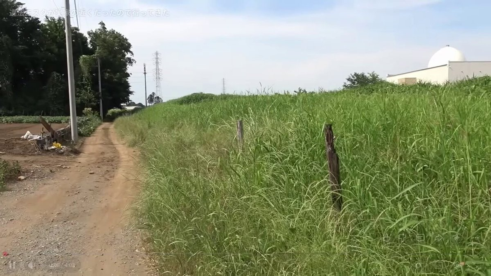
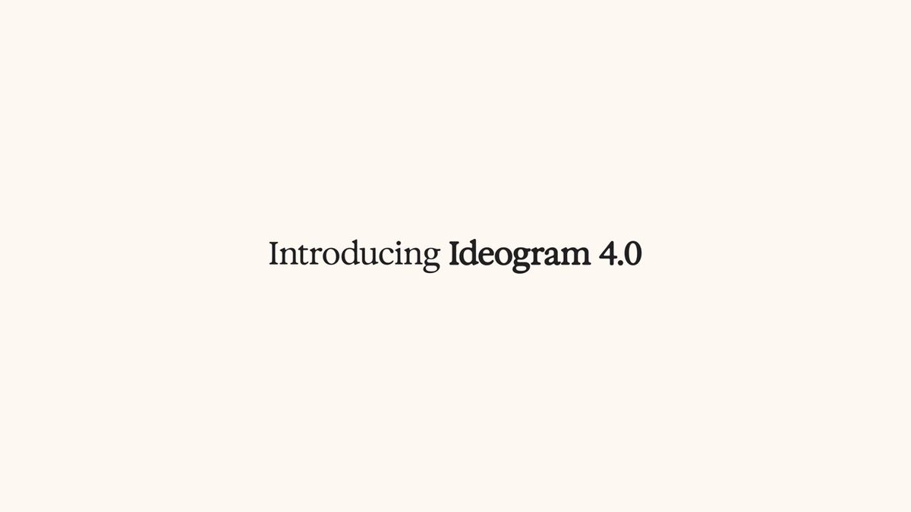
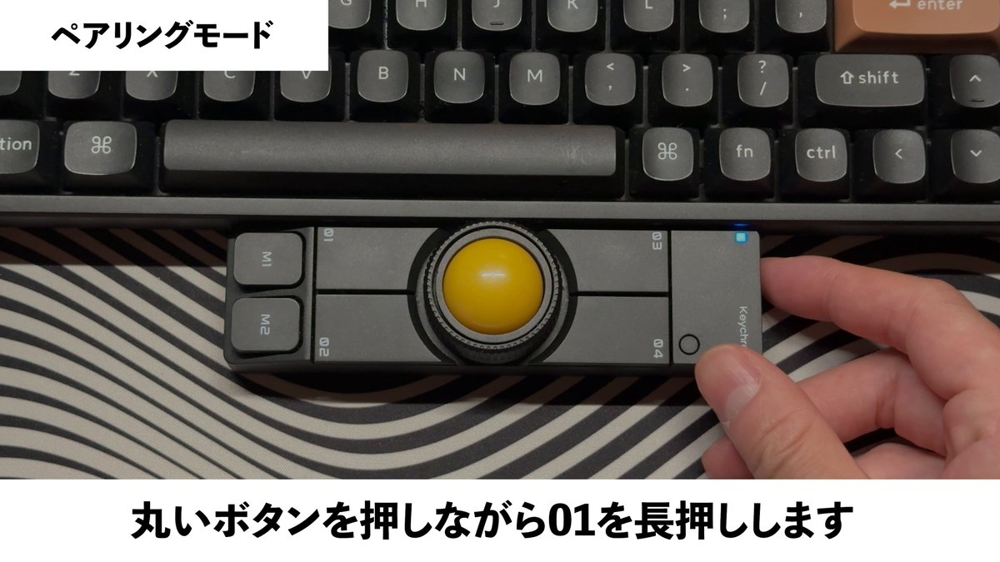
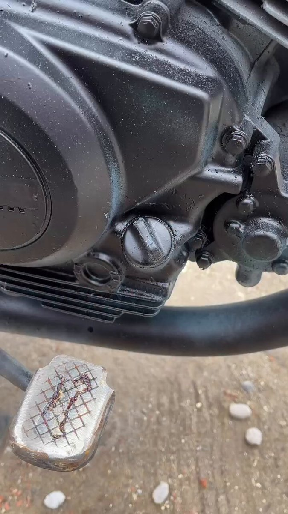
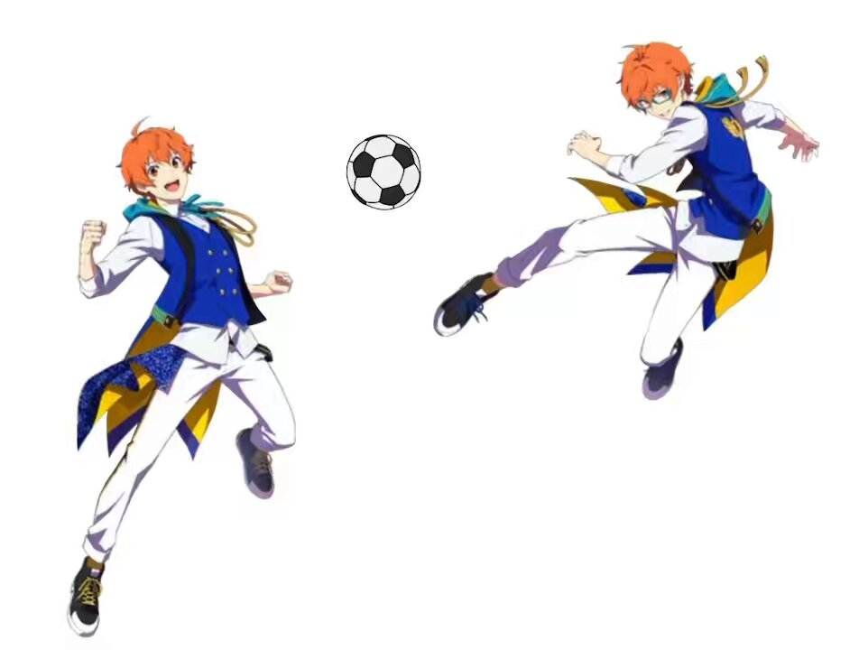
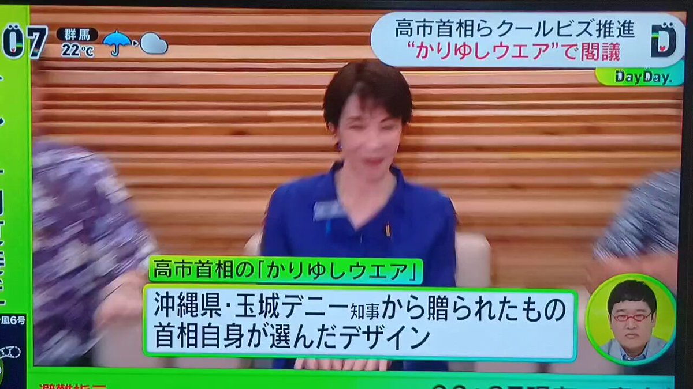
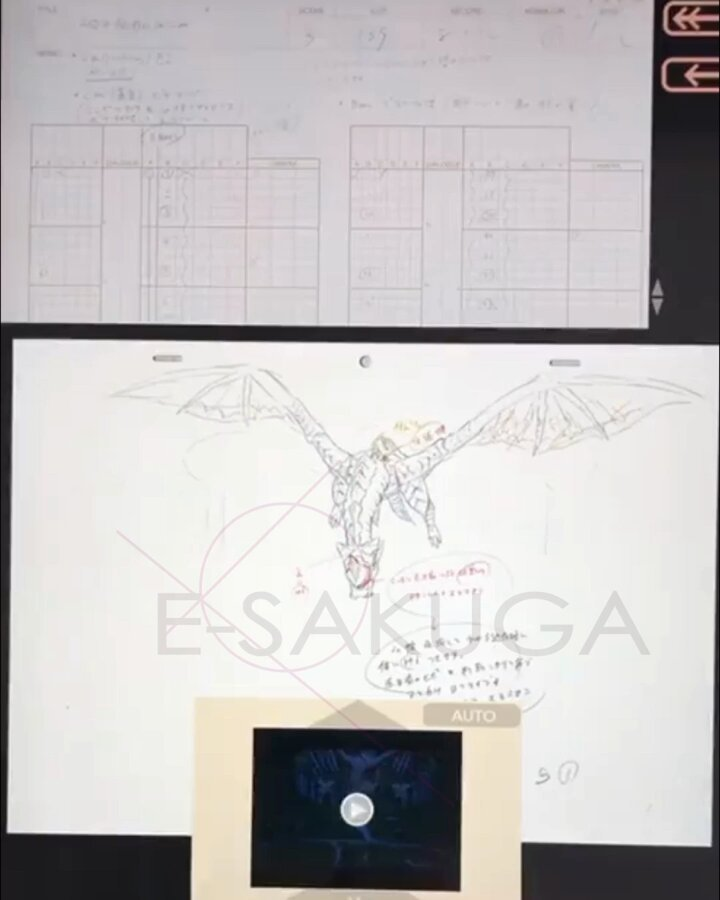

「雄叫び：ミニオン1体の種族を「すべて」に変える」って、グレード5のミニオン欲しい。
#HSBG #バトグラ
タイムライン要約
今日のまとめ
以下のタイムラインの要約を箇条書きで3-5つ作成しました。
* **AI技術の進展と社会・ビジネスへの影響:** Googleの新しいAIモデル（Gemma 4 12B）リリースや、OpenAIによるCodexおよび「スーパーアプリ」開発の動向が報じられています。また、AIの価値提供の薄さに対する「ブルシットAI」という概念や、AI検索への表示拒否機能テスト、企業でのAI活用方針など、技術開発からガバナンス、倫理に至るまで多角的な議論が展開されています。
* **経済の変動と物価上昇の課題:** 日経平均株価の反落や米テック株の「AI格差」、SpaceXの史上最大規模IPOなど、国内外の経済動向が報じられています。同時に、食品や日用品の値上げ、住宅ローン金利の上昇、NYの半地下経済といった物価高騰と家計への負担に関する話題も多く見られます。
* **日本の社会問題と国際情勢:** 出生率の低下と社会保障への影響、国境の離島における住宅問題、生活保護に関する議論、外国人労働者へのデータ検証記事など、日本の抱える社会課題が取り上げられています。国際情勢としては、天安門事件37年に関する米国からの声明やイランによる海峡封鎖示唆などの動きがあります。
* **ゲーム業界の話題とイベント:** 人気漫画のKindleセール終了、カプコンの名作「ファイナルファイト」のN64への勝手移植プロジェクト、くにおくんシリーズ新作やタクティカル潜入ゲーム「PROHIBEAST」の配信開始、スマホゲームのセルラン分析など、幅広いゲーム関連情報が共有されています。
* **AI技術の進展と社会・ビジネスへの影響:** Googleの新しいAIモデル（Gemma 4 12B）リリースや、OpenAIによるCodexおよび「スーパーアプリ」開発の動向が報じられています。また、AIの価値提供の薄さに対する「ブルシットAI」という概念や、AI検索への表示拒否機能テスト、企業でのAI活用方針など、技術開発からガバナンス、倫理に至るまで多角的な議論が展開されています。
* **経済の変動と物価上昇の課題:** 日経平均株価の反落や米テック株の「AI格差」、SpaceXの史上最大規模IPOなど、国内外の経済動向が報じられています。同時に、食品や日用品の値上げ、住宅ローン金利の上昇、NYの半地下経済といった物価高騰と家計への負担に関する話題も多く見られます。
* **日本の社会問題と国際情勢:** 出生率の低下と社会保障への影響、国境の離島における住宅問題、生活保護に関する議論、外国人労働者へのデータ検証記事など、日本の抱える社会課題が取り上げられています。国際情勢としては、天安門事件37年に関する米国からの声明やイランによる海峡封鎖示唆などの動きがあります。
* **ゲーム業界の話題とイベント:** 人気漫画のKindleセール終了、カプコンの名作「ファイナルファイト」のN64への勝手移植プロジェクト、くにおくんシリーズ新作やタクティカル潜入ゲーム「PROHIBEAST」の配信開始、スマホゲームのセルラン分析など、幅広いゲーム関連情報が共有されています。
【本日終了】人気漫画『てーきゅう』 『ルパン三世Y』 『バリスタ』などが「全巻33円」で買えるKindle本激安セールは今日まで！！ #漫画・アニメ等
【本日終了】人気漫画『てーきゅう』 『ルパン三世Y』 『バリスタ』などが「全巻33円」で買えるKindle本激安セールは今日まで！！ - オレ的ゲーム速報@刃の記事ページ
jin115.com
なんか動作がおかしいという話があるし、google/gemma-4-12B-it の方が若いので、もうちょっと待とう
Unsloth AI
@UnslothAI
Gemma 4 12B は、Dynamic GGUFs を通じて、わずか 8GB RAM でローカル実行が可能になりました。
Google の新モデル、Gemma 4 12B Unified は、画像、オーディオ、256K コンテキストをサポートします。
Unsloth Studio を通じて、このモデルを実行およびトレーニングできます。
GGUF:
カプコンの名作『ファイナルファイト』を、任天堂の名機『ニンテンドー64』へ勝手移植するプロジェクトが始動!!
N64は他機種と比べ自作ソフトそのものが少なく、この時点でかなり珍しい上に、題材は『ファイナルファイト』で、更にに勝手移植ときた
これは見逃せないッッ!!
https://
youtube.com/watch?v=ZhoNU8
9rB1A&t=
…

Google、AI検索への表示を拒否できるWebオーナー向けトグル機能のテスト開始
Google、AI検索への表示を拒否できるWebオーナー向けトグル機能のテスト開始
海外ゲームメディアが『ゲーム業界は高齢ゲーマー市場を見落としている』という、まるで我々に宛てたような記事を公開!!
I'm at 小坂PA (上り) in 小坂町, 秋田県
https://
app.foursquare.com/share/checkin/
6a20cfa2d99c0d4a193e6365?s=Ql4R7yU-vfx6NFsjG4P2Xv5FVyw&lang=en
…
みたいな⋯返事をするAIは、ブルシットAIだと思うで。タスクフォース検証委員会をたちあげても、事業はたいしてドライブしない
電車ユーザー「電車の席こっちの方がよくない？いつも目のやり場に困って辛い」→28万いいね #雑談・その他の話
電車ユーザー「電車の席こっちの方がよくない？いつも目のやり場に困って辛い」→28万いいね - オレ的ゲーム速報@刃の記事ページ
jin115.com
メインキャラ全員「くにお」！「西遊記」モチーフでシリーズ初のローグライトアクション『くにおくんの熱血西遊記 天竺乱闘編』配信開始
https://
gamespark.jp/article/2026/0
6/04/167363.html?utm_source=twitter&utm_medium=social&utm_content=tweet
…
https://
x.com/i/status/20598
90769524375972/video/1
…
学園アイドルマスター【公式】さんがリポスト
／
COCOストア
＼
『学園アイドルマスター』より「藤田ことね」がRe;IRIS Ver.で1/7フィギュア化！
#花海咲季、#月村手毬、#藤田ことね の1/7フィギュア3種すべて購入すると、ディスプレイマットがついてくる
☆完全受注生産☆
予約締切：9/10→
https://
coco-store.jp/products/96
#学マス #デザインココ
日経平均株価、反落し一時1000円安 米株安が重荷
日経平均株価、反落し一時1000円安 米株安が重荷
韓国地方選、与党が主要16首長選で12勝 ソウルは開票続く
韓国地方選、与党が主要16首長選で12勝 ソウルは開票続く
かなり本質をついていますね。ただし、実証をしない言い切りは危険です。検証すべきは、以下の3つを分析するタスクフォース委員会の立ち上げです。ここをしっかり抑えないと、AIの導入の方向性が大きく歪みます。
Sharaku Satoh
@sharakus
「ブルシットAIユーザー」や「ブルシットAIツール」「ブルシットAIコンサル」はあるかもしれませんが、人によってはGPT-4でも生産性を向上させられるので「ブルシットAI」は存在しないと思います。知能は使い方次第。 x.com/fladdict/statu…
CRYSTALiA公式さんがリポスト
【ご予約受付中！】
駿河屋通販で超大好評予約受付中な『ディメンション凸ラバース!! 通常版（
@CRYSTALiA_AC
）』ですが、もちろん当店でもご予約受付可能になっております！
『駿河屋 SPECiAL EDITION』はすいちゃんのタペを含む3大特典、通常の店舗特典付商品は2大特典（色紙＆パネル）となります！
駿河屋 成年向けPCソフト 店舗特典情報【公式】
@SurugayaAPC
＼受注再開！／
大好評につき二次受注分も完売状態でした『ディメンション凸ラバース!! 通常版（@CRYSTALiA_AC）』の3大店舗特典付商品である「駿河屋 SPECiAL EDITION」の「三次受注」を開始させて頂きました！ この夏『#とつラバ』のプレイはいかが？
※入荷次第順次出荷となります（7月17日頃見込）
https://
pic.x.com/cmUDcWcvx8
生活保護が大ブームに ナマポ民「働けるけど、労働のキツさと給料見たら割に合わない。月13万で充分なのよ。なので生活保護でまったり生活してます」
生活保護が大ブームに ナマポ民「働けるけど、労働のキツさと給料見たら割に合わない。月13万で充分なのよ。なので生活保護でまったり生活してます」 : ハムスター速報
日本人、食品や日用品などの値上げについて「何もかも値上げしているから仕方ない」と諦め始める #政治
日本人、食品や日用品などの値上げについて「何もかも値上げしているから仕方ない」と諦め始める - オレ的ゲーム速報@刃の記事ページ
jin115.com
現在のOpenAIは、CodexがClaude codeのお株を奪って、なんなら本体のChatGPTよりもコーディング意外の生産用途全体で優れるくらい伸びたことを契機に、明確にこちらを事業の核にしようとしているという報道があり、「スーパーアプリ」と呼ぶものの開発と組織再編を行なっている模様。
濱口竜介監督がカンヌで語った映画哲学
https://
nikkei.com/article/DGXZQO
UD22BCA0S6A520C2000000/?n_cid=SNSTW005&n_tw=1780496158
…
映画製作哲学の核に据えてきたのは「偶然を捉える」こと。カンヌ国際映画祭で女優賞を受けた新作「急に具合が悪くなる」を手掛けたのも「偶然」を巡る議論が決め手でした。
濱口竜介監督がカンヌで語った「偶然」 映画も世界も人生も
でなー
トークンをひたすら燃やして、事業成長に1mmも貢献しない価値提供の薄いAIを「ブルシットAI」と呼ぶべきではないか。
出生率（人口千対）は5.6、合計特殊出生率は1.14（1.14%ではない）
https://
mhlw.go.jp/toukei/saikin/
hw/jinkou/geppo/nengai25/dl/kekka.pdf
…
産経ニュース
@Sankei_news
出生率1・14％、過去最低を更新 出生数67万人 令和7年人口動態統計
https://
sankei.com/article/202606
03-YKZ2PNUHF5MFHKV22KNXRUIWYE/
…
厚生労働省は3日、令和7年の人口動態統計（概数）を発表した。1年間に生まれた日本人のみの子供の数（出生数）は前年比1万4937人減の67万1236人となり過去最少となった。
Haruhiko Okumuraさんがリポスト
Grokに戒名作ってもらった。もうこれでいいや、って遺言に書いておこうかな。これですむなら住職はAIで大打撃だな。
ーーーーーーーーーー
私の戒名を作って
あなたの戒名を作ってみました！
**野尻抱介（尻P）さん** らしい、ちょっとSFチックでユーモアを交えた戒名を3パターン提案します。
Haruhiko Okumura
@h_okumura
私の戒名はAIに作ってもらおう。なんとか叡愛居士みたいな x.com/math26/status/…
日経平均、反落で始まる 米株安で売り先行
日経平均、反落で始まる 米株安で売り先行
OpenAIがここまで派手な映画風動画匂わせをやるのは結構珍しいので、近日中にCodex関連で大きなアップデートがあると期待。
現状、OpenAIはCodexを基盤に「スーパーアプリ」なるものを開発しているようなのでその進捗か、GPT-5.6か、何か別物か。
OpenAI
@OpenAI
飛ぶ時が来た。
国境の離島「高すぎる」住宅 移住はばむ
https://
nikkei.com/article/DGXZQO
JC157L90V10C26A4000000/?n_cid=SNSTW005&n_tw=1780529968
…
島根県・隠岐諸島の知夫村は費用面から村営アパートの建設を断念。人気の沖縄・宮古島は不動産の価格が高騰しています。
国境の離島を維持するのに欠かせない住まい確保が苦境に陥っています。
国境離島「高すぎる」住宅 コスト本土の1.5倍で建設断念、移住はばむ
店内白いのそういう理由だったのか…普通におしゃれだナーと思っていた。
三井物産の堀社長、AI活用で効率化「社員のアウトプット2倍に」
三井物産の堀社長、AI活用で効率化「社員のアウトプット2倍に」
ペットボトルで給水できるコードレス高圧洗浄機が優秀。ベランダ掃除も洗車も強力噴射でピカピカに #BuyPR
ペットボトルで給水できるコードレス高圧洗浄機が優秀。ベランダ掃除も洗車も強力噴射でピカピカに | ギズモード・ジャパン
ポン☆潤々さんがリポスト
当店はお餅が得意な菓子屋なので、支店の内装もお餅を思わせる装いになっています。
机は白くて丸いお餅を、床の線は焼き網をイメージしています。
3枚目の画像と店内をリンクさせた遊び心ですが、敷居を跨いだ人間を喰らうタイプの血鬼術や領域展開ともとれるので積極的にはアピールしていません。
【物議】114億円分の覚醒剤を密輸した容疑で逮捕されたネパール人、不起訴 フェンタニル密輸問題も併せて司法を疑う声が殺到 #炎上
【物議】114億円分の覚醒剤を密輸した容疑で逮捕されたネパール人、不起訴 フェンタニル密輸問題も併せて司法を疑う声が殺到 - オレ的ゲーム速報@刃の記事ページ
jin115.com
【繁殖不能の蚊6400万匹の放出申請】
Google、アメリカで感染症対策を実験
https://
nikkei.com/article/DGXZQO
SG02CI50S6A600C2000000/?n_cid=SNSTW005&n_tw=1780529140
…
アメリカでは近年、蚊が媒介する西ナイル熱やデング熱の流行が問題となっています。
計画では「ボルバキア」と呼ばれる細菌に感染し、繁殖能力を失った雄の蚊を使います。
Google、繁殖不能の蚊6400万匹の放出申請 米国で感染症対策を実験
古い居酒屋でおじいちゃん店主にオススメ品を聞いたら、「前は焼き鳥やってたんだけど1人になって大変だからやめちゃったの！前は….奥さんがいたからねぇ！」って悲しそうに遠くを見出して、こちらも『俺はオススメを聞いたんだが…』って遠くを見ました。もしかして思い出が1番のオススメなのかな。
スマホゲームのセルラン分析（2026年5月21日〜5月27日）。今週の1位は「モンスト」。1月〜3月に日本で1周年を迎えた主なタイトルも紹介
https://
4gamer.net/s/G023612.2606
01004
…
「七つの大罪 光と闇の交戦」は7周年イベント，「ドラゴンボール レジェンズ」は8周年イベントで収益を伸ばしている
I'm at JAL PLAZA in 青森市, 青森県
https://
app.foursquare.com/share/checkin/
6a20bf5ce7ddf43df0bbddfa?s=omb0kf1SVxqeGbqemJcJ7nF90Ng&lang=en
…
御翔印を購入してレンタカーでGO
沖縄でもデータセンターってあちこちにあるんではなかったかな？ #アップ738
I'm at 青森空港 in 青森市, 青森県
https://
app.foursquare.com/share/checkin/
6a20bcce6edcc320d2bb1e13?s=UPogyNEYpM1qK0dwocZ-OmZQJro&lang=en
…
ヤマダHD・エディオン統合「検討は事実」 5日の取締役会で決議
ヤマダHD・エディオン統合「検討は事実」 5日の取締役会で決議
モバプリさん、そのスーパーネタは松田しょうさんの持ちネタを侵略してる気がするw #アップ738
まずは南下して錦木塚へ。
軍手
@gunziotaku
錦木塚に伝わる伝説は非常に物悲しいものであって、原作のアサウラさんがどういう考えでこの地の伝説の名をヒロインに与えたかを見てこようと思います。 x.com/gunziotaku/sta…
あまり考えたことなかったけど確かに近いかも
1週間くらい調子が出ない
男鹿半島が見えてきた。もう高度下げてる。
Google､AI検索の引用を拒否可能に 世界で機能提供へ
Google､AI検索の引用を拒否可能に 世界で機能提供へ
日経平均株価、米株安と中東情勢の不透明感が重荷（先読み株式相場）
日経平均株価、米株安と中東情勢の不透明感が重荷（先読み株式相場）
撤去されたんじゃなくて普通の改札機にカメラがついたのか
【文春】高市陣営のネット工作疑惑、ついに『音声』公開 #炎上
【文春】高市陣営のネット工作疑惑、ついに『音声』公開 - オレ的ゲーム速報@刃の記事ページ
jin115.com
なるせひろのりさんがリポスト
とんでもないだろ、これ...
北村晴男氏「入管が参考人として呼んだ学者が『外国人比率が増えて困るなら、どんどん帰化させて日本人にすれば外国人比率が下がる』と言った」
北村氏「入管とは本来、国家を最も意識すべき機関」
ところがその指南役が「国籍は数合わせ」と言い放つ。
google/gemma-4-12B
https://
huggingface.co/google/gemma-4
-12B
… 10時間前
google/gemma-4-12B-it
https://
huggingface.co/google/gemma-4
-12B-it
… 2時間前
GGUFはもうちょっと待ったほうがいい？
google/gemma-4-12B · Hugging Face
【悲報】Z世代さん、上司に詰められ逆ギレ殺害→上司になりすましサラ金マネーで豪遊
■大和田和秀(26)容疑者
・勤務先の廃品回収会社で、上司かつ同級生である男性から注意を受ける
→逆上して上司を包丁で刺殺
・殺害後、上司の身分証を使い消費者金融で100万円を借りて豪遊
・金を使い切って自首
滝沢ガレソ
@tkzwgrs
【悲報】Z世代さん、ついにチャッピーを犯罪に利用し始める
■岡山県在住の20代男性会社員×2名
・無人の倉庫に侵入して車の鍵など3万円相当の物品を盗む
・「ChatGPTで誰も使ってなさそうな倉庫を調べた」と供述
・仕事だけでなく犯罪もAIで効率化する時代がついに到来か x.com/tkzwgrs/status…
日本語出せるのまじ？？？すごい
ちょっと前に「AI に書かせたコードを人間が読むか AI レビューに任せるか」論争あったけど、GOROman さんみたいな管理職経験ある人ほど（元々マネジメント側に移っていたから）コード見なくてええやろと言い、現役エンジニアほどしっかり読まないとダメだろ…と言っていた印象がなんとなくある
Torishima / INTP
@izutorishima
父親と度々 Codex とか AI エージェントのマネジメントに関する愚痴を相談したりしているが、別分野とはいえ技術系管理職目線だと驚くほど人間の部下のマネジメントと本質的に同じ問題ぽくて、管理職経験ある人ほどストレスなく的確に使いこなせるんだろうなあと思いました
なるせひろのりさんがリポスト
ルビオ米国務長官、天安門事件「検閲で記憶消せない」 37周年で声明
http://
reut.rs/4uaYz2Z
ルビオ米国務長官、天安門事件「検閲で記憶消せない」 37周年で声明
ピラミッドが何千年も地震に耐えられた理由
ピラミッドが何千年も地震に耐えられた理由 | ギズモード・ジャパン
炎天下で使うほど充電される。ソーラーパネル内蔵の腰掛けファンが合理的すぎる #BuyPR
炎天下で使うほど充電される。ソーラーパネル内蔵の腰掛けファンが合理的すぎる | ギズモード・ジャパン
うえぞうさんが本職では非エンジニアらしいの未だに信じられなさすぎる
うえぞう@うな技研代表
@uezochan
しかしあれだな、わたしのような非エンジニアのど素人でもものづくりできるようになったの本当にありがたいなAI様様ですわ
滋賀県彦根市で「ゴミ袋が買えない」と市民からの苦情が相次ぐ。そこで市役所が調べたところ、2025年の指定ゴミ袋の販売量850万枚と同じ量の供給量は確保していたことが判明。つまり買いだめする人が増えて足りなくなってるだけだった。去年のコメも今年のナフサも、「足りない」と大騒ぎになるのはだ
「ゴミ袋が買えない」苦情相次ぎ、市が調査…例年通り８５０万枚程度確保も「指定外袋」認める臨時措置（読売新聞オンライン） - Yahoo!ニュース
「ゴミ袋が買えない」苦情相次ぎ、市が調査…例年通り８５０万枚程度確保も「指定外袋」認める臨時措置（読売新聞オンライン） - Yahoo!ニュース
オタク起床
ウクライナは戦線の1万5000のドローン部隊からの映像を蓄積し、トータルで200万時間、年に直すとなんと228年分にもなる膨大な学習データを獲得した。これがウクライナが先行するAI戦争の非常に貴重な財産になっているという分析。まさにフィジカルAI。「200万時間は、実戦の戦闘映像として公に知られる
ウクライナのドローン戦は戦争の経済を変え、投資先は防衛大手でなくAIインフラだと示す | Forbes JAPAN 公式サイト（フォーブス ジャパン）
ウクライナのドローン戦は戦争の経済を変え、投資先は防衛大手でなくAIインフラだと示す | Forbes JAPAN 公式サイト（フォーブス ジャパン）
【兵庫県たつの市】
川で発見の遺体、母娘殺害で指名手配中の容疑者と特定 県警
川で発見の遺体、母娘殺害で指名手配中の容疑者と特定 兵庫県警
Torishima / INTPさんがリポスト
Gemma 4、音声は時間方向に1次元になってるからそのまま入れていいけれど、画像は縦横1次元だから位置情報とかのembeddingが必要とか？
つまり実質的には両方ともそのままMLLMに入れている(ただし画像は次元数変換が必要なので1層多い)ということ…？
https://
x.com/i/status/20622
17380202418663
…
Torishima / INTP
@izutorishima
オイオイオイ Gemma 4 12B がリリースされてんだけど！？！？しかも画像と音声両方マルチモーダルだしエンコーダーレスとかどう言うことやねん
マルチモーダルなのに Vision Encoder と Audio Encoder がないってどう言うアーキテクチャなんや
https://
huggingface.co/google/gemma-4
-12B-it
…
父親と度々 Codex とか AI エージェントのマネジメントに関する愚痴を相談したりしているが、別分野とはいえ技術系管理職目線だと驚くほど人間の部下のマネジメントと本質的に同じ問題ぽくて、管理職経験ある人ほどストレスなく的確に使いこなせるんだろうなあと思いました
なるせひろのりさんがリポスト
＜主張＞天安門事件37年 中国こそ歴史を直視せよ
https://
sankei.com/article/202606
04-ZSLH6PL35RNIFPJ4MXH54WSBUA/
…
今年も中国の共産党独裁と民主主義を考える上で忘れてはならない日を迎えた。中国の民主化運動が武力弾圧された天安門事件の発生から37年となる4日、事件の真相究明と責任追及を中国に改めて要求する。
＜主張＞天安門事件37年 中国こそ歴史を直視せよ 社説
イラン、バブ・エル・マンデブ海峡の封鎖を示唆 「第2のホルムズ」となる可能性 | Forbes JAPAN 公式サイト（フォーブス ジャパン）
イラン、バブ・エル・マンデブ海峡の封鎖を示唆 「第2のホルムズ」となる可能性 | Forbes JAPAN 公式サイト（フォーブス ジャパン）
イスラエルは戦争を止める気がない模様なので、これ以上の戦線拡大を防ぐにはトランプがイスラエルを抑えるしかない。先日の電話会談ではネタニヤフを罵倒したと報じられてるけど、それでイスラエルは止められるのか。「イランの通信社タスニムは、イスラエルがレバノンのヒズボラに対して軍事作戦を続
しっかり雨対策をして、深い森の中の山道を歩く。夏は雨の山も最高に気持ちいいという話をVoicyで語っています。↓
夏の雨の山を歩く愉しみ | 佐々木俊尚「毎朝の思考」/ Voicy - 音声プラットフォーム
夏の雨の山を歩く愉しみ | 佐々木俊尚「毎朝の思考」/ Voicy - 音声プラットフォーム
緩い時代に作られた口座だろうなぁ。
ジョンお姉さん
@8oCNPjtVCE11158
「当協議会は、（略）辺野古の海を守るという一点において緩やかに集まった「非営利の市民の集合体」に過ぎません。そこには、メンバー間の行動を強制・管理する権限もなければ、企業のような指揮命令関係も一切存在しません。」
え？
ゆうちょの口座開設条件www
口座www
https://
lovehenoko.org/%e3%80%90%e8%b
e%ba%e9%87%8e%e5%8f%a4%e6%b2%96%e8%88%b9%e8%88%b6%e4%ba%8b%e6%95%85%e3%80%91%ef%bc%95%e6%9c%8829%e6%97%a5%e3%81%ab%e5%a0%b1%e9%81%93%e6%a9%9f%e9%96%a2%e3%81%ab%e7%99%ba%e8%a1%a8%e3%81%97/
…
デニーズ、ハンバーグなど68品値上げ 食材高で10日から
デニーズ、ハンバーグなど68品値上げ 食材高で10日から
山で「風」を装備する時代がくるのか！？酷暑の山歩きを快適にするための切り札、モンベル「ファンブローライトベスト」をフィールドで使ってみた - Outdoor Gearzine "アウトドアギアジン"
山で「風」を装備する時代がくるのか！？酷暑の山歩きを快適にするための切り札、モンベル「ファンブローライトベスト」をフィールドで使ってみた - Outdoor Gearzine "アウトドアギアジン"
モンベルが登山用の空調服を出してて、その詳細な試用レポート。バックパックと干渉しない位置にファンが設置されてたり、バックパックと背中が密着しないようなメッシュのオプションがあったりとよくできてる感じ。稼働は最大30時間、そこそこ快適な強さでも9時間とあるから日帰り山行なら十分そう。
私の戒名はAIに作ってもらおう。なんとか叡愛居士みたいな
math26
@math26
月刊住職の「ＡＩに戒名を作らせて何が問題か」、目を惹きます
外国人問題について、ファクトに基づいて論じた良記事。若年外国人労働者が多ければ、年金や国民健康保険の財源に寄与。しかし今後家族帯同など年齢が上の層が増えてくると話はまた別で、総合的なしくみづくりは必要なのでしょう。↓
「移民が増えると治安が悪化」「外国人は医療保険ただ乗りで優遇」をデータ検証、判明した意外な事実とは
「移民が増えると治安が悪化」「外国人は医療保険ただ乗りで優遇」をデータ検証、判明した意外な事実とは
なるせひろのりさんがリポスト
中国がいくら検閲しようと天安門事件「抹消」できない 米国
中国がいくら検閲しようと天安門事件「抹消」できない 米国
英国政治が、日本の2000年代みたいなことになってる。「過去7年で首相は5人。誰一人として、総選挙から次の総選挙までの期間を全うしていない」。この国際情勢では政治の安定性はとても重要で、日本はそこは安心感がある。そしてこれも肝に銘じたい指摘。BBC「最近の有権者は政治にはトレードオフがつ
【解説】イギリスの首相であり続けるのは、今やかつてないほど難しいのか - BBCニュース
【解説】イギリスの首相であり続けるのは、今やかつてないほど難しいのか - BBCニュース
三菱UFJが中小企業向け金融サービス、460兆円市場参入 再編の呼び水
三菱UFJが中小企業向け金融サービス、460兆円市場参入 再編の呼び水
電車の席こっちの方がよくない？いつも目のやり場に困って辛い→実際にこういう席が導入されている電車を利用した人の感想など集まる
電車の席こっちの方がよくない？いつも目のやり場に困って辛い→実際にこういう席が導入されている電車を利用した人の感想など集まる
羽田のモノレールもこういう中央席あり、韓国の鉄道にもあるらしい。スペースが狭くなって乗り降りに時間がかかり、緊急時の避難も難しくなる。車いすも入りにくい。ちゃんと理由があって電車のロングシートの構造ってできてるんですね。↓
嫁「今の夫と不妊治療中だけど離婚しそうだから托卵しちゃおｗ」→マジでヤバすぎる事態に・・・ #雑談・その他の話
嫁「今の夫と不妊治療中だけど離婚しそうだから托卵しちゃおｗ」→マジでヤバすぎる事態に・・・ - オレ的ゲーム速報@刃の記事ページ
jin115.com
JALのダイヤモンド会員デスクは比較的すぐ繋がりますよ。ANAのダイヤモンド会員デスクは3時間待ちます。
どこまでも改悪していくな笑
山梨・上野原の美しい田園風景と街を舞台に、小林聡美さん主演で一篇の楽しいショートフィルムになってるクリープハイプのMV。素敵。↓
クリープハイプ、小林聡美が演じる主人公の“人生を肯定していく姿”を「私の歌」MVで描く | Daily News | Billboard JAPAN
クリープハイプ、小林聡美が演じる主人公の“人生を肯定していく姿”を「私の歌」MVで描く
青森空港まで50分のフライト。短ッ
そごう・西武、「小型百貨店」を2年で10店に
https://
nikkei.com/article/DGXZQO
UC0298I0S6A600C2000000/?n_cid=SNSTW005&n_tw=1780487285
…
贈答需要の見込める和洋菓子を中心に扱う小型店をイオンなどに出店します。千葉・柏や埼玉・川口など百貨店を閉店した地域の既存顧客のつなぎとめや新たな顧客の取り込みを目指します。
そごう・西武、「小型百貨店」を2年で倍増 イオン系SCに初出店
今日から販売開始！
すき家から「とん汁みそらーめん」期間限定で登場 一部店舗で提供したメニュー、好評で販売拡大
（記事URLはリプから）
すき家から「とん汁みそらーめん」期間限定で登場 一部店舗で提供したメニュー、好評で販売拡大（1/3） | グルメ ねとらぼ
おはようございます。
「Forza Horizon 6」がフレーム生成なしでも60fps以上で動く!? 「Intel Arc G3 Extreme」搭載の携帯型ゲームPCは注目する価値がある
https://
4gamer.net/s/G091273.2606
03060
…
Intel初の携帯型ゲームPC向けプロセッサ「Arc G」シリーズの実力を，デモ機でゲームをプレイして確かめてみた
［インタビュー］戦車×ヒーローシューター「World of Tanks: HEAT」，異色の組み合わせはなぜ生まれたのか。「World of Tanks」との違いや今後の方針を聞く
https://
4gamer.net/s/G093797.2606
02062
…
5月26日に正式リリースを迎えた新作について，クリエイティブ・ディレクターにメールインタビューを実施
なるせひろのりさんがリポスト
動画に特化したキヤノンVシリーズ、待望のフルサイズ「EOS R6 V」を試す【小寺信良の週刊 Electric Zooma!】
https://
av.watch.impress.co.jp/docs/series/zo
oma/2114047.html
…
ITmedia NEWSさんがリポスト
「AI使うな」より「使うなら教えて」 エージェント時代のガバナンス再設計
「AI使うな」より「使うなら教えて」 エージェント時代のガバナンス再設計
深津 貴之 / THE GUILD, noteさんがリポスト
京都芸術大学様・株式会社クロステック・マネジメント様と共に開発してきた伴走型AI「Neighbuddy」が授業運用を開始しました。
AIを使って答えを出すのではなく、
AIと対話しながら自分なりの問いを深めていく。
そんな「学び」の実装に挑戦しています
ぜひ記事をご覧ください。
住宅ローン「超長期」急増、首都圏新築は3人に1人 家計にリスク
住宅ローン「超長期」急増、首都圏新築は3人に1人 家計にリスク
あぁこれでXi YinはOpenAIにjoinしたのか
@yujitach
·
こちらは Harvard の知人の Xi Yin が準備中の場の量子論の教科書(?)のようです:
https://
github.com/xiyin137/QFT pdf はおいてないので、clone して manuscript/tex/main.tex を自分でコンパイルする必要はありますが。既に3000頁ぐらい(!)あります。すこし前から彼は、LLM つかって既存の場の量子論の知識を
これって物理のclassical/quantumに相当するのかな
しましま
@shima__shima
前者を epistemic uncertainty 後者をaleatoric uncertainty としてどちらも論じられているかと思います
https://
en.wikipedia.org/wiki/Uncertain
ty_quantification#Sources
…
アスクル社長に成松岳志氏 吉岡社長は退任、サイバー攻撃で業績悪化
アスクル社長に成松岳志氏 吉岡晃社長は退任、サイバー攻撃で業績悪化
このコメンテーターが６月に詰むと見たw
茶請け
@ttensan2nd
間違いなく6月に詰むと言っていたナフサ境野春彦まとめ更新。
・6月に日本は詰む
・ホルムズ湾
・与党はナフサ取ってこい！！以上
・自分の意見はENEOSの総意
・気持ちを言ってるんであって、額面通り受け取りなさんな（ENEOSの総意を騙って突っ込まれた際に）
はいふりっぽいなと思ったら劇場版？
ANIS
@ANIS62858471
#これだけで何のアニメか分かった人は強者
Haruhiko Okumuraさんがリポスト
MAI-Thinking-1のテクニカルレポートには、ベンチマーク上でSonnet級に近いモデルを一から開発するための知見が書かれている。特に、単一モデルの性能だけでなく、継続的にモデルを改善する能力を重視しており、大規模モデル開発の工程・運用・判断基準について興味深い記述が多い。
Torishima / INTPさんがリポスト
アファンタジアというらしい。落合陽一さん、ひろゆきさんあたりは、この辺りが同じぽい。
トラウマとかフラッシュバックが起きづらいというメリットもあると聞きました。へー。確かに嫌な思い出とか一切残らないから、マジで忘れてしまう。
けんすう
@kensuu
めっちゃ僕の感覚に近い。「頭の中のリンゴを思い浮かべてください」でリンゴを思い浮かべるというのがイマイチ理解できない。言っている意味はわかる。
映像を思い浮かべるはもっと難しい。
正確に言うと、すごく頑張ると一瞬できる感じ。 x.com/ochyai/status/…
Googleが「Gemma 4 12B」をリリース。ノートPCで動いて26B級の性能、またお化けローカルLLM
Googleが「Gemma 4 12B」をリリース。ノートPCで動いて26B級の性能、またお化けローカルLLM | ギズモード・ジャパン
好楽さんが息子に席を譲る？か、山田くんがついにクビか。
笑点
@shoten_ntv
【お知らせ】
笑点がついに・・・重大発表
6月7日(日)夕方5時30分から放送
住宅版残クレアルファード 始まる
住宅版残クレアルファード 始まる : ハムスター速報
ケモノなアンタッチャブルがアル・カポネの犯罪帝国に立ち向かうタクティカル潜入ゲーム『PROHIBEAST』配信！
潜入、戦略、部隊の連携に焦点を当てており、観察力とステルス能力、そして臨機応変な対応力を駆使します。
https://
gamespark.jp/article/2026/0
6/04/167362.html?utm_source=twitter&utm_medium=social&utm_content=tweet
…

「出生率1.14」が社会保障を直撃 将来世代の負担増
https://
nikkei.com/article/DGXZQO
UA290T50Z20C26A5000000/?n_cid=SNSTW005&n_tw=1780488632
…
人口減で、2050年には労働力人口も足元より1割以上減少する見込みです。試算によると、50年の働き手の負担は現在よりも1人あたり40万円増えます。
出生率1.14、社会保障を直撃 支え手負担が2050年に40万円増の試算
なるせひろのりさんがリポスト
トヨタ『ランドクルーザー』など、計6車種4万3300台をリコール…メーターが正しく起動しない
https://
response.jp/article/2026/0
6/04/412230.html?utm_source=twitter&utm_medium=social&utm_content=tweet
…
#トヨタ #ランドクルーザー250 #クラウン #ミライ
Acerが新型タブレットを発表。クリエイティブ向けの「Iconia Duo S14」など3モデル
Acerが新型タブレットを発表。クリエイティブ向けの「Iconia Duo S14」など3モデル | ギズモード・ジャパン
SpaceX、IPOで750億ドル（約12兆円）調達へ 時価総額は1兆7700億ドルの見通し
SpaceX、IPOで750億ドル（約12兆円）調達へ 時価総額は1兆7700億ドルの見通し
村田製作所、米スタートアップと時刻同期技術を検証 低軌道衛星を活用
村田製作所、米スタートアップと時刻同期技術を検証 低軌道衛星を活用
イランがオマーン湾で米軍艦に攻撃か 米国は否定、交渉継続を主張
イランがオマーン湾で米軍艦に攻撃か 米国は否定、交渉継続を主張
GPT-5.5 の 1M Context ってどうも実質使えないのか・・・ GPT-5.4 の頃には実験的に使えていたはずなのだが
https://
github.com/openai/codex/i
ssues/19464
…
そもそも結構１回のチャットが長くなりがちなんだよな最近・・・チャット欄で相当コンテキストを詰め込みがちだから
あくまでも保険適用されている範囲の医療行為は、他の病気と同じく医療扶助で自己負担ゼロであって、その他の自由診療については助成に制限を設けている自治体もある。
スマートリング「Oura」、新型を日本で発売 4割小型化で「世界最小」
スマートリング「Oura」、新型を日本で発売 4割小型化で「世界最小」
データセンター、窓はないしセキュリティが強化されてるし、外からは何をしているかわからない得体の知れない施設と思っちゃう人はそれなりにいるもんなぁ。市民運動で話題にするのには悪くないネタではあるなぁ。建築基準法では建てられる建物だったりするし。 #アップ738
羽田空港のこの時間帯の混雑は酷いよなあ
はい、早速ディレイだよ
なお、JALモバイル特典で往復1500マイルどこかにマイルクーポンがまだある
わたしの記憶では青森空港は初かな
目についたシークレットフライトタグを購入。他のJALのショップは在庫切れだった。
青森空港へ！
女性VTuberさん、突然◯◯を公表して活動終了へ こんなのありなんだ・・・ #VTuber
女性VTuberさん、突然◯◯を公表して活動終了へ こんなのありなんだ・・・ - オレ的ゲーム速報@刃の記事ページ
jin115.com
GPT-5.5 、結局なんだかんだ有能なので手放せないが故に自分の思い通りにならないと結局ブチ切れまくる精神衛生に悪い日々が続いている・・・
キオクシア株は高嶺の花 個人投資家「手が出ない」
https://
nikkei.com/article/DGXZQO
UB0265G0S6A600C2000000/?n_cid=SNSTW005&n_tw=1780485576
…
「もはやお金持ちと機関投資家のみ触れる銘柄だ」
株価上昇に伴い最低投資金額は780万円に。期待していた株式分割の発表もなく、個人投資家からは困惑の声が漏れます。
キオクシア株は高嶺の花 分割期待空振り、個人投資家「手が出ない」
にっこり( ◜◡◝ )
【柴犬】膝の上に乗る愛犬→カメラを向けると……“まさかの表情”に「AIかと思った」「だから柴好き」
（記事URLはリプから）
写真を撮るときの愛犬の様子が、Threadsで話題です。投稿は記事執筆時点で4万回以上表示され、1万件以上の“いいね”を獲得しています。シービージャパン ヘアバンド 吸水速乾マイクロファイバー 綿の3倍 [頭囲44-66cm] 柴犬 洗顔 プール お風呂 マシュマロ肌触り 吸水アニマルヘアバンド Z…
nlab.itmedia.co.jp
【となりのヒデオ】小島監督、ニューヨークへ！あの映画監督やあの俳優とのツーショットが続々。ニューヨークを訪れた理由にも迫る
【となりのヒデオ】小島監督、ニューヨークへ！あの映画監督やあの俳優とのツーショットが続々。ニューヨークを訪れた理由にも迫る | Game*Spark - 国内・海外ゲーム情報サイト
つば二郎@きいちゃんすこすこ侍さんがリポスト
#フォルクス #割引キャンペーン
前回実施のＸフォルクスはじめて割り！
大変ご好評いただけました( ˶ˆ꒳ˆ˵ )
リポストして下さった方々に感謝です
そこで＼もっと！／ご利用いただきたい♪
そう考えて第二弾として復活です|•ω•｡)ﾁﾗｯ
こちらの画像をお会計の際にご提示いただくことで
スペースX、IPO調達額史上最大の12兆円と発表 時価総額283兆円に
https://
nikkei.com/article/DGXZQO
GN0403J0U6A600C2000000/?n_cid=SNSTW005&n_tw=1780523622
…
公開価格は1株135ドルに設定し、時価総額は約1兆7700億ドル（約283兆円）となります。
スペースX、IPO調達額史上最大の12兆円と発表 時価総額283兆円に
Alphabet、AI資本調達で需要超過 公募などで450億ドル確保、総額850億ドル計画へ
Alphabet、AI資本調達で需要超過 公募などで450億ドル確保、総額850億ドル計画へ
申請段階なので不認可になる可能性もある…？
なるせひろのりさんがリポスト
痛いニュース(ﾉ∀`) : 【埼玉】川越市・違法建築のモスク、撤去計画書出した翌月に開所式…出席した駐日パキスタン大使側は「許認可済みと聞いた」と釈明 - ライブドアブログ
【埼玉】川越市・違法建築のモスク、撤去計画書出した翌月に開所式…出席した駐日パキスタン大使側は「許認可済みと聞いた」と釈明 : 痛いニュース(ﾉ∀`)
NYの貧困層が頼る「半地下経済」 散髪1300円、貧者のコストコ盛況
https://
nikkei.com/article/DGXZQO
GN1603K0W6A510C2000000/?n_cid=SNSTW005&n_tw=1780520947
…
世界でも最も物価が高い都市のひとつとされるニューヨーク。きらびやかな摩天楼の陰に隠れた「半地下経済圏」に迫ります。
NYの貧困層が頼る「半地下経済」 散髪1300円、貧者のコストコ盛況
なるせひろのりさんがリポスト
【たつの市遺体 指名手配の男と判明】
たつの市遺体 指名手配の男と判明 - Yahoo!ニュース
米テック「マグニフィセント7」の株価に「AI格差」
https://
nikkei.com/article/DGXZQO
UB265I30W6A520C2000000/?n_cid=SNSTW005&n_tw=1780479847
…
NVIDIAやAppleは昨年末比で株価が上昇している一方、テスラやメタは下落。各社が進める巨額のAI投資が収益に結びつくか、市場が見極めようとしています。
米テック7社に「AI格差」 NVIDIAやApple株上昇、メタ・テスラ下落
Torishima / INTPさんがリポスト
成功談は「その人だからできた」が多いですが、失敗談はかなり汎用性がありますよね。
何を踏むと人生が壊れやすいのか、どこで引き返せなくなるのか。ネットはある意味、無料で読める膨大な失敗事例集なのだと思います。
テック株の影に沈むビットコイン 市場、６万ドルも視野
テック株の影に沈むビットコイン 市場、6万ドルも視野
スペースX、IPO調達額史上最大の12兆円と発表 時価総額283兆円に
スペースX、IPO調達額史上最大の12兆円と発表 時価総額283兆円に
もし死んだ時は親しい友人に譲る旨書いてある(と同時にハードディスクの物理的破壊
びわ湖の周りは戦ばっかりやな。
びわ湖くん
@biwako__shiga
ホリエモン俺とSUSURU間違えてる説 x.com/susuru_tv/stat…
DeepSeek を久々に開いたら画像認識モード（ベータ版）なんてのが追加されてたけど DeepSeek v4 って画像入力対応してないはずでは・・・
危ねぇ！朝からビールと思ってて冷蔵庫開けた瞬間にこの後レンタカーだ！と思い出した
NYダウ反落620ドル安、米イラン攻撃応酬に懸念 原油96ドル台に上昇
NYダウ反落620ドル安、米イラン攻撃応酬に懸念 原油96ドル台に上昇
なるせひろのりさんがリポスト
Amazon傘下のRingが無断で顔認識データを収集したとして集団訴訟を提起される - GIGAZINE
https://
gigazine.net/news/20260603-
amazon-ring-scanning/
…
アマゾンだからね ガチガチにイビルだからね
AmazonのスマートドアベルやセキュリティカメラブランドであるRingは、AIによる画像処理やAlexaを用いた応答機能などを搭載した製品を展開しています。そんなRingが訪問者や通行人の顔認識データを無断で収集・利用していることから、「勝手に撮影されて顔認識データにされている人に対して補償するべき」として500万ドル(約8億円)を超える損害賠償を求める集団訴訟が提起されました。
gigazine.net
モバイルバッテリーの検査、各空港で厳しさが全く違ってビビる
【Game Pass】新作サバクラ『ソーラーパンク：天空の島』や『Starseeker: Astroneer Expeditions』含む9本登場―2026年6月中旬までの追加ラインナップ公開
https://
gamespark.jp/article/2026/0
6/04/167360.html?utm_source=twitter&utm_medium=social&utm_content=tweet
…
今回は新作が5本も登場！
https://
x.com/i/status/20602
82519719686254/video/1
…

米当局、予測市場のビットコイン「永久先物」認可 取引所と競合も
米当局、予測市場のビットコイン「永久先物」認可 取引所と競合も
ぬこぬこさんのバイタリティすげえなあ
なるせひろのりさんがリポスト
中国 天安門事件からきょうで37年 事件知らない若い世代も
https://
news.web.nhk/newsweb/na/na-
k10015140131000
… #nhk_news
中国 天安門事件からきょうで37年 事件知らない若い世代も | NHKニュース
トランプ氏がバンス氏後継に｢迷い｣ イラン攻撃で溝か、カギ握る長男
https://
nikkei.com/article/DGXZQO
GN031QZ0T00C26A6000000/?n_cid=SNSTW005&n_tw=1780516587
…
トランプ氏と長年の友人関係にあるという南部フロリダ州の共和幹部は「トランプ氏はバンス氏とルビオ氏を最大限競わせて、両者への世論の注目を高めようと考えている」との見方を示します。
トランプ氏がバンス氏後継に｢迷い｣ イラン攻撃で溝か、カギ握る長男
統合もびっくりだけど今家電量販店業界ってノジマが2位に付けてたの
円建て保険販売12年ぶり高水準 預金は外貨、金利・物価にらみ選別
円建て保険販売12年ぶり高水準 預金は外貨、金利・物価にらみ選別
むくり。
日本経済新聞 電子版（日経電子版）さんがリポスト
BYDの爆速EV充電、3分で東京〜大阪分 中国で記者が体験
BYDの爆速EV充電、3分で東京〜大阪分 中国で記者が体験
朝起きたらドル円160円台になっていた。
I'm at ダイヤモンド・プレミアラウンジ in 大田区, Tōkyō
https://
app.foursquare.com/share/checkin/
6a208dceda834d49e5cf596c?s=3j3IYT6oNF1BXRQhfXDDxgXbuEo&lang=en
…
I'm at 東京国際空港 (羽田空港) in 大田区, 東京都
https://
app.foursquare.com/share/checkin/
6a208daaa610b808561067bc?s=UyE-c09LnDfWl71zG14eSWKHn2c&lang=en
…
こういう時にこうなるから、会社に趣味の限界移動結果を報告しない方がいい
がくモン
@55_gakumon
ワシ「台風で交通が無理そうなので仕事休みます…」
会社「君は、明石海峡大橋が豪雨で渡れなかった時、高速船で淡路島に渡って、路線バスと高速バスを乗り継いで徳島までサッカーの試合見に行ってたよね？」
日産を縛る高金利調達 利払い｢新車開発2車種分｣、自力再生足かせに
日産を縛る高金利調達 利払い｢新車開発2車種分｣、自力再生足かせに
三菱自動車や日産、30年にもEV使う電力取引 安く充電･高く放電
三菱自動車や日産、30年にもEV使う電力取引 安く充電･高く放電
「省ナフサ」おむつ原料、でんぷん使い開発 長瀬産業が供給不足対策
「省ナフサ」おむつ原料、でんぷん使い開発 長瀬産業が供給不足対策
Google、繁殖不能の蚊6400万匹の放出申請 米国で感染症対策を実験
https://
nikkei.com/article/DGXZQO
SG02CI50S6A600C2000000/?n_cid=SNSTW005&n_tw=1780515124
…
計画は「ボルバキア」と呼ばれる細菌に感染した雄の蚊を使います。
感染した雄の蚊が野生の雌の蚊と交尾しても卵がふ化せず、次世代の個体が生まれなくなります。
Google、繁殖不能の蚊6400万匹の放出申請 米国で感染症対策を実験
日本経済新聞 電子版（日経電子版）さんがリポスト
野村絢氏らアクティビスト、鉄道株に的 保有不動産に比べ割安
野村絢氏らアクティビスト、鉄道株に的 保有不動産に比べ割安
韓国地方選、ソウルで投票用紙不足 野党が「無効」訴え
https://
nikkei.com/article/DGXZQO
GM03D1F0T00C26A6000000/?n_cid=SNSTW005&n_tw=1780511824
…
韓国の聯合ニュースによると、松坡区の投票所では午後1時ごろから用紙不足が発生し、午後4時半以降は投票が停止。有権者は追加の用紙が届くまで待機を強いられ、待ちきれずに帰宅する人も出ました。
韓国地方選挙、ソウルで投票用紙不足 野党が「無効」訴え
インバウンドの皆さんが持ってる異常な大きさのスーツケースどこに売ってんだ？わたしは全部サムソナイトで揃えてるんだけど、店舗であんまり見ない。
この前Uber Eatsで盗み食い(配達員が受け取って配達せずに自分で食ってた)が発覚したのでな…
エンドスさんがリポスト
ＮＹ外為市場＝円160円台に下落、中東情勢受けドル高が継続
http://
reut.rs/4a760Rq
ＮＹ外為市場＝円160円台に下落、中東情勢受けドル高が継続
欧州の未公開株ファンドで解約制限 プライベートクレジット問題再び
欧州の未公開株ファンドで解約制限 プライベートクレジット問題再び
とりしま (Sub I/O)さんがリポスト
かぐやの義体開発してる時彩葉さんどんな心境だったんだろ…………ってのはめちゃくちゃ思う。
10年かけて追いかけちゃうような大好きな子の体をまあ他の研究者と作り上げるわけで。
嫌じゃない……？真っ裸じゃん……？？義体とはいえ見られるの嫌じゃん……？
I'm at モノレール浜松町駅 in 港区, 東京都
https://
app.foursquare.com/share/checkin/
6a208884930f1a04bdc75eea?s=1-unFDA3euOeXGJXFOTkhpOxEFE&lang=en
…
政府「助けて！日本の少子化に歯止めがかかってない状況なの！」 #政治
政府「助けて！日本の少子化に歯止めがかかってない状況なの！」 - オレ的ゲーム速報@刃の記事ページ
jin115.com
なんで LLM から分かち書きされた文章が出てくるんだろうな・・・明らかに学習データセット間違えてない？
画像と音声を Unified しようとした結果日本語音声とのアライメント取るのに失敗したとかなんだろうか
liaru
@liaru
いや、Unsloth 版Gemma 4 12B、12Bだからか、世界知識はあんまり期待はしてないけど、流石にこれは少なくとも日本語じゃ常用できねぇな。
パランティア、株主総会でAI倫理巡り紛糾 イスラエル軍やICEに技術
パランティア、株主総会でAI倫理巡り紛糾 イスラエル軍やICEに技術
「割安のワナ」にはまった円相場 米投資家、対ドル170円予想も
「割安のワナ」にはまった円相場 米投資家、対ドル170円予想も
この時間でだいぶ明るい
トランプ氏、ネタニヤフ氏罵倒を認める 「レバノン攻撃に動揺した」
トランプ氏、ネタニヤフ氏罵倒を認める 「レバノン攻撃に動揺した」
トランプ氏がバンス氏後継に｢迷い｣ イラン攻撃で溝か、カギ握る長男
トランプ氏がバンス氏後継に｢迷い｣ イラン攻撃で溝か、カギ握る長男
いるか@心が酒びたっているんださんがリポスト
自民党内の議論を見ていると、再審法では井出庸生さんが、国旗損壊罪では岩屋毅さんが、非常に的確に表現の自由に関わる問題を指摘してくれている。法案の党内審査のスケジュールが公開され、こういう人たちが声を上げて論点を明確にしているのが、自民党の国民政党・包括政党としての強さだとは思う。
Torishima / INTPさんがリポスト
やっぱそうだよな、E2Bのほうがよっぽど日本語うまいよな
なんか12Bはgemmaっぽいあの流暢さが全然なくてびっくりするな
Torishima / INTPさんがリポスト
llama.cppが古いかなと最新リリースをダウンロードして試した結果・・・
Torishima / INTPさんがリポスト
Gemma 4 31Bモデルで若干不満があるレベルなのに、12Bモデルに期待した私がお馬鹿さん
日本語が潰滅的
なんでToken（っぽい）の間に半角スペース入るんだよ……
なにか回避方法があるかもしれないが、基本的に設定を煮詰める必用のあるモデルは嫌い
私の小説の生成用途には向かないね
おかえり31B
天野水樹@ノクタ民エンジョイ勢
@MizukiAMANO1
私の技術介入型ポン出しシステムが吐き出すプロンプト、Gemma4で良い感じに出力するのが解ったのだけれど
中に複数の物語記述言語が混在しているので、31Bモデル以外だと記号が溢れてしまう
多分12Bも同じ様に溢れるとは思うのだけれど、テストするまでは寝られぬ……
なるせひろのりさんがリポスト
1989年6月4日.それは起こりました。
「天安門事件」です。
中国の若者が大勢、中国共産党に殺されました。
中国共産党は悪魔のようなことを自国民に対して行ったのです。
忘れてはいけません。
そして、中国人は知るべきです。

それ Git for Windows についてるコマンドと何が違うんや（Git for Windows についてるコマンドをシステム環境変数にぶち込んでるので Unix コマンドが使えるようにしている）
［速報］マイクロソフト、UNIX系コマンドをWindowsに移植「Coreutils for Windows」一般公開
チャッピーと遊んでたらこんな時間に…
パニグレくんのスキル説明よくわからんからチャッピーと相談しながら逆冠ローテのたたき台作ってた
慣れてないからまだ自分だけでやったほうが早いかもしれんけどさくっとこういう画像出してくれるのは楽だな
これまだ正しくない箇所あるから鵜呑みにしないでね
家のEVコンセント工事の見積もりしてもらって1週間以上音沙汰ないんだけどこんなもんなのか
相見積しといた方がいいかなぁ
Torishima / INTPさんがリポスト
gemma 4 12B を使ってみてる rtx4060 8gbなので、まあ速度はあれだけど
日本語は何か微妙？ 知識は悪くなさそうだけど、文節？に空白が入る おま環かも
アニメ作品のイベント行って、おもんなバラエティやられると本当にがっかりするんだよな
声優オタクは楽しめるのかもしれんけど、イベントの主役が作品じゃなくて声優になってしまっている
なるせひろのりさんがリポスト
堀江さんって、思い込みを事実だと触れ回る癖はやめた方がいいと思うんだよね。
「ひろゆきは仕事のLINEグループに彼女を入れた」とかデマ流してたし、、
SUSURU
@susuru_tv
好き勝手に言われてますがまずいって言ったこと一度もないです！
大変すすれました x.com/rbl125836/stat…
なるせひろのりさんがリポスト
温水君、抱えきれるかな…
負けヒロイン、二人で落ちるか一人で落ちるか
#マケイン
@6045sora
温水 和彦 監督作品
宇宙の船 ＵＳＡ
#マケイン #マケイン_FA
日本語終わりすぎてるのまじか・・・
きしだൠ(K1S)
@kis
Gemma 4 12B「山口県という名称の件は日本には存在しません」
まじすか・・・
Torishima / INTPさんがリポスト
ぜんぜんだめです。量子化の問題かもしれないけど、それはそれで、そういう問題が起きやすい何かがあるということでもある。
#dnb / #GuttingAudio
Drelio & Chozk - Deviljho
https://
youtube.com/watch?v=jpEqZq
YJRDE&list=PL_F42GZ969hiF-tWFt6DFT0O0l_-BEym-&index=5
…
Gutting Audio
➔Released: 28/05/26
➔Cat: GTTNEP026
#bassline #dubstep / #1985Music
GLM & Verbz - Jack It
https://
youtube.com/watch?v=n_tbwn
V8jpM&list=PL_F42GZ969hiF-tWFt6DFT0O0l_-BEym-&index=4
…
米アルファベット、増資額7600億円積み増し 投資家の引き合い強く
米アルファベット、増資額7600億円積み増し 投資家の引き合い強く
米メキシコ国境に地下トンネル、麻薬密輸の最前線 過去には1キロ超
米メキシコ国境に秘密の地下トンネル、麻薬密輸の最前線 過去には1キロ超の長さも
#dnb / #SoulInMotion
Shadow Club & Need For Mirrors - Want
https://
youtube.com/watch?v=S-cigv
V3OFo&list=PL_F42GZ969hiF-tWFt6DFT0O0l_-BEym-&index=3
…
Torishima / INTPさんがリポスト
プログラマやアニメーターなんかもそうだけど教育や訓練を「ちゃんとやろう」とすると朝起きて夜眠れるまともなタイプの人だけをふるいにかけることになる
そういうところから唯一無二の存在は産まれにくいだろうね
#dnb #liquidfunk / #Liquicity
Edlan & Benito Diablo - Healing ft. Ella Hammill
https://
youtube.com/watch?v=rrnp70
qNNwo&list=PL_F42GZ969hiF-tWFt6DFT0O0l_-BEym-&index=2
…
LIQ298
Liquicity Records
26/05/2026
Liquicityもそろそろ300番突入…!?
#dnb / #TransparentAudio
Felov & Lauren Walton - Take Care
https://
youtube.com/watch?v=ZAdbr1
fqs0s&list=PL_F42GZ969hiF-tWFt6DFT0O0l_-BEym-
…
Torishima / INTPさんがリポスト
私も早く確認しないよなあ。日本語がヘボな件が気になる。
https://
x.com/kis/status/206
/kis/status/2062230201296363757
…
ヤマダはあんなガラガラで採算取れているのか謎なんだよな…
プロンプトを公開しました
GitHub - tsukumijima/YacchoGPT: ヤオヨロ〜！雑談も調べ物も悩み相談もお任せあれ！
おはようございます。青森空港行が早いので早めのお目覚め。
常識では考えられないレンタカー、見つかるｗｗｗｗｗ #雑談・その他の話
常識では考えられないレンタカー、見つかるｗｗｗｗｗ - オレ的ゲーム速報@刃の記事ページ
jin115.com
堀江さんって、 ベタ足の立ちまわりしか出来ないのに、なんで勝てる気で居るんだろう。。。？
>ホリエモン、ブレイキングダウン参戦に意欲！「ひろゆきとだったらやるよ」とまさかの宣言
ホリエモン、ブレイキングダウン参戦に意欲！「ひろゆきとだったらやるよ」とまさかの宣言（スポニチアネックス） - Yahoo!ニュース
日本でも選管のミスはしばしば起こるけど、投票用紙が不足するってのは流石に…しかも韓国の場合は尹錫悦前大統領の非常戒厳も不正選挙陰謀論を下地にしたようなところがあり、「国民の力」支持者を勢いづかす結果になってしまっているというのが、なんとも。
ADHDとASDを併発している？自分の場合両方の特性が併存しているから、発散したものを収束するのが多分得意なんだけどものすごく「脳力」を使うし時間がかかるしパフォーマンスが低い・・・・
AI半導体ブロードコム、時価総額2兆ドルでTSMC超え 最高益予想
決算:AI半導体ブロードコム、時価総額2兆ドルでTSMC超え 最高益予想
なるせひろのりさんがリポスト
RTX SPARKで、カプコンの「PRAGMATA」をレイトレーシングモードで動かしてみたら…
ちなみにCPUコードはPrism動作です。
RTX SPARKのゲームパフォーマンスについては詳細記事近日公開予定。
アーキテクチャ解説は既に公開済みです。
https://
youtu.be/kP5fhtcOUu0
#RTXSPARK
RTX SPARKのアーキテクチャ面の解説は既に公開済みhttps://www.4gamer.net/games/869/G0869...
youtube.com
Torishima / INTPさんがリポスト
量子化で記憶が薄れてるみたいなことがあるとしても、県レベルでこれだとちょっと・・・
これはつい消しか
きしだൠ(K1S)
@kis
そして動かしてだめそうだったらつい消しや x.com/kis/status/206…
Torishima / INTPさんがリポスト
Gemma 4 12B「山口県という名称の件は日本には存在しません」
まじすか・・・
Torishima / INTPさんがリポスト
現実世界の論理が、今、あなたのビデオ生成に。
Gemini Omni は、Gemini の歴史、生物学、物語論理に関する深い知識を活用して、現実世界のように見え、振る舞うビデオを生成します。
仕組みを見てください ↓

『ドラクエ』誕生秘話を描いた伝説的な漫画『ドラゴンクエストへの道』36年の時を経て、電子書籍版で復刻発売！書籍版はすでに絶版でプレミアム価格 #ゲーム業界
『ドラクエ』誕生秘話を描いた伝説的な漫画『ドラゴンクエストへの道』36年の時を経て、電子書籍版で復刻発売！書籍版はすでに絶版でプレミアム価格 - オレ的ゲーム速報@刃の記事ページ
jin115.com
画像/音声エンコーダーを排除して直接ぶち込んでるらしいけどそんなことできるんすか・・・
ファインチューニングしやすくするためらしい？
オイオイオイ Gemma 4 12B がリリースされてんだけど！？！？しかも画像と音声両方マルチモーダルだしエンコーダーレスとかどう言うことやねん
マルチモーダルなのに Vision Encoder と Audio Encoder がないってどう言うアーキテクチャなんや
google/gemma-4-12B-it · Hugging Face
Torishima / INTPさんがリポスト
Ideogram 4 まさかのモデル配布だ～
ローカルで使えるモデルの中では結構レベチかもです
日本語も超いけるし生成速度も十分に早い
（RTX5090 896x1184 で20秒ぐらい）
編集もすごいっぽいけどそっちは適切なワークフローわからんので待機
ただプロンプトはむずそうかも
Ideogram
@ideogram_ai
Ideogram 4.0 のご紹介：世界最高のオープン画像モデル。
考えろ。作れ。所有しろ。
重みをダウンロードし、自分のデータでファインチューニングを行い、自分のハードウェアで実行せよ。今日からすべての Ideogram プランおよび API で利用可能。
日本経済新聞 電子版（日経電子版）さんがリポスト
日本・フィリピン海洋の境界画定、交渉の狙いは？ 中国と台湾は反発
https://
nikkei.com/article/DGXZQO
UA031Y30T00C26A6000000/?n_cid=SNSTW005&n_tw=1780507170
…

今日も一日
https://
nicovideo.jp/watch/sm463874
89
…
日本経済新聞 電子版（日経電子版）さんがリポスト
東京の出生数10年ぶり増、ピークの30代定着か 都は｢流入説｣否定
https://
nikkei.com/article/DGXZQO
CC033JP0T00C26A6000000/?n_cid=SNSTW005&n_tw=1780506911
…
都は東京を「出会いの場」として結婚する人が増えたのに加え、結婚後も東京にとどまって出産・子育てをする30代が増えたことが都内の出生数増加に寄与したとみています。
東京の出生数10年ぶり増、ピークの30代定着か 都は｢流入説｣否定
よくよく考えたら（よくよく考えなくても）そもそも QVC 福島の音MADを公式で出す発想自体がイカれてる 怖い！！！！！！
小林製薬の糸ようじ【公式】
@KOBAYASHI_PR20
スルッと入ります！
正気か？？？？？？？？？？？？？本当に怖い
小林製薬の糸ようじ【公式】
@KOBAYASHI_PR20
スルッと入ります！
テスラさんがリポスト
日本経済新聞 電子版（日経電子版）さんがリポスト
【日経特報】ヤマダHD・エディオン統合へ 持ち株会社検討、2.5兆円家電連合
https://
nikkei.com/article/DGXZQO
UC069AI0W6A400C2000000/?n_cid=SNSTW005&n_tw=1780506394
…

【最大4人】ファンタジー世界で旅商人として生きる協力対応ADV＆経営シム『Roads & Riches』発表！探索しアイテム仕入れキャラバン率いて売り歩く
https://
gamespark.jp/article/2026/0
6/04/167359.html?utm_source=twitter&utm_medium=social&utm_content=tweet
…

日本経済新聞 電子版（日経電子版）さんがリポスト
【日経特報】ヤマダHD・エディオン統合へ 持ち株会社検討、2.5兆円家電連合
ヤマダHD・エディオン統合へ 持ち株会社検討、2.5兆円家電連合
X民（このミスよくやるんだよな、代わりに直しとこ）ﾋｮｲｯ→相手「謝れ！」X民「え、なんで？」←ブチギレの理由が物議に #雑談・その他の話
X民（このミスよくやるんだよな、代わりに直しとこ）ﾋｮｲｯ→相手「謝れ！」X民「え、なんで？」←ブチギレの理由が物議に - オレ的ゲーム速報@刃の記事ページ
jin115.com
テスラさんがリポスト
米CBSテレビ、看板ジャーナリスト解雇 親トランプ経営陣で混乱続く
米CBSテレビ、看板ジャーナリスト解雇 親トランプ経営陣で混乱続く
米ISMサービス業景況感、0.9ポイント上昇 市場予想上回る
米ISMサービス業景況感、0.9ポイント上昇 市場予想上回る
GoogleAI検索に英の新規制、メディアがコンテンツ利用の拒否可能に
GoogleAI検索に英の新規制、メディアがコンテンツ利用の拒否可能に
お、Gemma4は今まで31Bと26B-A4BとE4BとE2Bしかなかったけど、あらたに12Bのサイズがリリース！このサイズはあれば嬉しい！VRAMが10GBくらいあれば動かせるサイズ感。ベンチスコアもGemma3-27Bを凌駕してGemma4-26Bに近いスコアが出てる
Google Gemma
@googlegemma
Gemma 4 12B に会いましょう！
エッジ効率と先進的な推論のギャップを埋める、統一されたエンコーダー不要のマルチモーダルモデル。ラップトップに直接高性能な知能をもたらすために設計されており、Apache 2.0 ライセンスの下でリリースされました。
Gemma 4 12B の新機能はこちら：
いまだに見たことない、、RP
【日本の法治主義はイスラムに勝利する】
ここまで清々しいデタラメだと、市の対応は簡単
相手に弁明の余地がない
行政代執行によるモスク破壊を皆で実況中継すれば世界中でバズるよ！
欧米記者も羨んで取材に来るだろう
無法ムスリムの居場所がこの国には無いことを世界中に見せつけようぜ！

カシミール88
@kashmir88ks
【川越市の違法モスクに行ってきた人の話】
モスクのあたりは地目が「山林」市街化調整区域
建築許可が難しいから勝手に建てたらしい
開発には富士見市の不動産会社が協力、犯罪である
そして請け負った施工業者も違法と知りながらで
とんでもない会社である
川越市は壊せと言っているが
【全部半額】『Angel Beats!』『リトルバスターズ』『Charlotte』『クドわふたー』『神様になった日』など漫画版が全て「50％オフ」セール！Key27周年記念！ #漫画・アニメ等
【全部半額】『Angel Beats!』『リトルバスターズ』『Charlotte』『クドわふたー』『神様になった日』など漫画版が全て「50％オフ」セール！Key27周年記念！ - オレ的ゲーム速報@刃の記事ページ
jin115.com
【最大4人協力プレイ】傑作コーヒーを作り夢のカフェを運営するシム『Cafe Crew Simulator』Steamにてリリース。猫やゴミ袋になって邪魔するライバルモードも
https://
gamespark.jp/article/2026/0
6/04/167358.html?utm_source=twitter&utm_medium=social&utm_content=tweet
…
Torishima / INTPさんがリポスト
Google Deepmind 様、継続的にオープンなモデルを公開してくださりありがとうございます！
Dynamic GGUFs を作成しましたので、Gemma 4 12B をより効率的に実行できます：
unsloth/gemma-4-12b-it-GGUF · Hugging Face
アニメキャラを降ろすというのは何もアニメの女の子が二次元として現れることではなく、純粋にアニメの女の子のような人間が救いとして現れることの祈願であり、多くの場合それが偽物であるから問題なのである。キリストが2000年降臨しなくても待ち続けるように生きねばならない。
Torishima / INTPさんがリポスト
私たちの新しい統一アーキテクチャにより、Gemma 4 12B がマルチモーダル入力をネイティブに処理できるようになりました。以下にその方法を説明します

Torishima / INTPさんがリポスト
Gemma 4 12B は、小さなメモリフットプリントと革新的なアーキテクチャにより、優れたパフォーマンスを提供します。
Haruhiko Okumuraさんがリポスト
本日、Gemma 4 12B を発表します — 高度なエージェント的推論、視覚、音声を直接ラップトップに持ち込む最新のオープン モデルです。
これは、より大きな Gemma モデルに匹敵する性能を提供しつつ、はるかに小さな総メモリ使用量を実現し、わずか 16GB の VRAM
女子「コンビニに停めた自転車が盗まれた！監視カメラ見せてください！」 店員「OK」 → ヤバすぎる映像が流れて死ぬｗｗｗｗｗ #雑談・その他の話
女子「コンビニに停めた自転車が盗まれた！監視カメラ見せてください！」 店員「OK」 → ヤバすぎる映像が流れて死ぬｗｗｗｗｗ - オレ的ゲーム速報@刃の記事ページ
jin115.com
渡辺浩弐さんがリポスト
【新作公開しました】
工藤友美が #渡辺浩弐 さんの小説を朗読しちゃうぞ〜！！
プラトニックチェーンより
『向こう岸から』
聴いてください！
YouTube直リンク
小説家・渡辺浩弐さんの物語を工藤友美が朗読します！今回はプラトニックチェーン〔下〕 (星海社文庫)より「向こう岸から」をお届け...
youtube.com
超かぐに脳を灼かれてから4ヶ月弱も経ったのか
働けない高齢者や障碍者は都内だと生活保護費で14万円貰えます。
無職で出産した女性も働けないんだから、産休期間中は生活保護と同額貰えていいんじゃないの？
Torishima / INTPさんがリポスト
Ideogram 4.0 のご紹介：世界最高のオープン画像モデル。
考えろ。作れ。所有しろ。
重みをダウンロードし、自分のデータでファインチューニングを行い、自分のハードウェアで実行せよ。今日からすべての Ideogram プランおよび API で利用可能。

AVITAMINOSEさんがリポスト
投票用紙が足りない事態になり、市民ら300-400名が集結していた蚕室7洞投票所に警察官10数名が投入されました。市民らは投票箱の搬出を阻止しており警察との物理的な衝突の可能性もあります。心配。
연합뉴스
@yonhaptweet
[速報] 「対峙状況」 잠실7동 投票所に警察数十人投入
https://
yna.co.kr/view/AKR202606
03087200004?input=tw
…
日本人の子どもを増やそうってきちんと言える政党。
神谷宗幣【参政党】
@jinkamiya
私の想定以上に下がりました。
子供を産みたいと思える社会や制度をさらに強く訴えていきます。
25年生まれ過去最少の67万人 出生率最低1.14、上昇13県(共同通信)
#Yahooニュース
https://
news.yahoo.co.jp/articles/e2d1d
947c3c05e03c6b77cd2a041718618d81ce4?source=sns&dv=sp&mid=other&date=20260603&ctg=dom&bt=tw_up
…
大人なのでシロクマくんに追い練乳して食べてる
日産、中国・奇瑞の車両生産を検討 英工場で27年度にも
日産、中国・奇瑞の車両生産を検討 英工場で27年度にも
撮って出しでも結構いい雰囲気で撮れてるな
Torishima / INTP
@izutorishima
やっぱ完全な夜景だと手持ちだとブレまくってるのが多いな・・・このへんは結構お気に入り
夕焼けはめっちゃ綺麗に撮れている x.com/izutorishima/s…
輿水畏子さんがリポスト
シェリハン
大概是不会接着画的草稿（
[涂鸦] 仅限登录(2 图像) - cramez49 的 Poipiku
poipiku.com
スマホ版「Pokémon Champions」，配信日を6月17日に決定。ライチュウと，メガシンカ用のアイテムが手に入るキャンペーンが実施決定
https://
4gamer.net/s/G088683.2606
04001
…
メガライチュウ2種類の特性も明らかに
やっぱ完全な夜景だと手持ちだとブレまくってるのが多いな・・・このへんは結構お気に入り
夕焼けはめっちゃ綺麗に撮れている
Torishima / INTP
@izutorishima
夜景がとても綺麗だった
ただ現地で確認したときより暗い仕上がりになってる感じがするんだよなあ、レタッチすればなんとかなるのかもだが
あれホント人間がやる仕事じゃないよねー。あの手のテストをPlaywrightなりで自動化できていないところは、Mythosとか対応しようがないと思うのだけど、みんなどうするのだろうか？
ちょまどITエンジニア
@chomado
私は実際に新卒で入った日系会社でこれをやって3日で鬱、2週間目で発狂して(実際に「適応障害」の診断書が出た)
即退職届を出して転職しました x.com/gyodon_se/stat…
夜景がとても綺麗だった
ただ現地で確認したときより暗い仕上がりになってる感じがするんだよなあ、レタッチすればなんとかなるのかもだが
コスモクロック21に一人で乗って写真をバシャバシャ撮る異常者をやっていました
夜の観覧車は内側から見るライトアップが綺麗なんだよね（と万博後に天保山大観覧車に乗った時に思った）
Torishima / INTP
@izutorishima
一眼で撮るとやっぱええなあ・・・ x.com/izutorishima/s…
アニメキャラコスプレを実在聖地に放り込む神降ろしをやるしかないのかもしれない。
上伊那のインスタ運用はその嚆矢のように感じる。一色いろはさん…
最近マイクロソフトやNVidiaがローカルLLMを推し出してきててアツそうと言う話。RTXSparkとかね。
Georgi Gerganov
@ggerganov
今年のComputexでローカルAIの強い兆候。NVIDIAやMicrosoftのような大手企業がローカルAIワークロードを採用し、議論しています。専用コンシューマハードウェアとモデルが到来中です。
広告費を辞退じゃなくて、受け取って寄付したらいいんじゃないかな。
ゆいぴす
@yuipis18
今回のマンジャロに関する件につきまして、誠に申し訳ございませんでした。
不快な思いをされた方、不安な思いをされた方、そして日頃より応援してくださっている皆さまに、心よりお詫び申し上げます。
今回の発信が薬機法上の問題を含むものであったことを、真摯に受け止めております。
Torishima / INTPさんがリポスト
なので、いち参加者として、運営とか場所とか費用とか、そんな参加者にとってクソほどどうでも良いことは気にせず、その場にいて楽しかったと思って帰っていただければもう私は大満足なのです
めんどくさい人がもしいたら出禁にするのでいつでも遠慮なく教えてくださいね！
一眼で撮るとやっぱええなあ・・・
Torishima / INTP
@izutorishima
うおがしや、1.5Kでガチ旨ラーメンとお寿司をいただける『『『福祉』』』がある x.com/izutorishima/s…
Haruhiko Okumuraさんがリポスト
[PDF] 不審な認証画面の表示について
2026年6月3日
象印マホービン株式会社
https://
zojirushi.co.jp/important/info
/20260603.pdf
…
『当サイトの一部ページにおいて、外部サービス（polyfill .io）を経由し、不審な認証画面が表示される事象が発生していた可能性があることを確認いたしました。
ふと気になって alias ll="ls -l" のような使い方はBerkeleyのcsh時代からあった雰囲気だよな、とChatGPTさんに調査してもらったが、(csh時代なのはあってそうだけど)誰がいつ使い始めたとかは見つけられなかった
シェル
@shell_waywise
恥ずかしながら ll ってコマンドを初めて知った……めちゃ便利やんこれ…
今まで全然 ls -l してた…………
Torishima / INTPさんがリポスト
意図を汲んでくれていて感謝！
たまに運営に入れてください！と言われるけど絶対にイヤw 手伝ってくださる方々には感謝ですが、中の人を除いて全員いち参加者でいてくれと思うw 運営ポジまじいらないw
私は私にとってのオモロい場を作るだけであって、金勘定とか忖度とかクソほど興味ないw #aimeetup
びーぐる / Beagle Works
@beagle_dog_inu
これは別にどこの話というわけでは一切ないんだけど、コミュニティが大きくなると権力闘争を始めたり、私利私欲で私物化する人間が現れるのは万国共通の、人間が人間である以上絶対に避けられない問題かなと。
ギャル2人の出会いどうでも良すぎる…
オタクくんでないと終わりだよ
5月の米民間雇用12.2万人増、市場予想上回る ADP調べ
5月の米民間雇用12.2万人増、市場予想上回る ADP調べ
ギャルだしとりあえずネイルしとけばいいだろうという感じのネイルありがとう。
いや、アニメの女の子はピンクの髪や赤い瞳を持っているんだから、自然に緑や青の爪が生えてくるに決まっているだろう。ネイルってなんだよ。
Torishima / INTPさんがリポスト
しかしあれだな、わたしのような非エンジニアのど素人でもものづくりできるようになったの本当にありがたいなAI様様ですわ
キラモンのオタクだから略してキモオタだし、主人公は瀬尾卓也(せおたくや)だからオタクくんなんだよね。
メタ要素も匂わせるローグライクACT『Dungeon Lurker』発表―呪われたダンジョンに挑むレトロ風ゲーム
https://
gamespark.jp/article/2026/0
6/04/167357.html?utm_source=twitter&utm_medium=social&utm_content=tweet
…
レトロな公式サイトも公開中―ただの"ゲーム”ではなさそうなローグライクACT
Wordle 1,811 5/6
クラにかって大学編まであんの？
なるせひろのりさんがリポスト
7月23日発売の週刊少年チャンピオン３４号より
「バドこん！」というコメディー漫画を連載させて頂きます。
よろしくお願いします！
渡辺浩弐さんがリポスト
6月4日は虫の日だよ
渡辺浩弐
@kozysan
6月4日、虫の日ですね!
https://
sai-zen-sen.jp/works/fictions
/gamekids2013/30/01.html
…
ロマンス要素もある熱帯の島の環境回復目指す生活SLG『Tideborne Haven』Kickstarter開始！100ポンドの支援で“飼っているペットをゲームに登場させる”ことも可能
https://
gamespark.jp/article/2026/0
6/04/167356.html?utm_source=twitter&utm_medium=social&utm_content=tweet
…
渡辺浩弐さんがリポスト
ムシの日
渡辺浩弐
@kozysan
『日々是コージ中』更新。6月4日、ムシの日です。虫についてのこわい話があります。今食べていたショートケーキ、実は……↓
【日刊SPA!】第513回
https://
nikkan-spa.jp/hibi/1471215 @weekly_SPA さんから
線がめちゃくちゃ綺麗
絵茶！？！？うますぎる……
AVITAMINOSEさんがリポスト
[6・3 地方選] 「不正選挙」デモ隊、光化門を通過し、過天選管委へ向かう
[6·3 지선] '부정선거' 시위대, 광화문 찍고 과천 선관위로 향해 | 연합뉴스
警察「そこの車止まって！運転中に右手でスマホ操作してたよね？」 女性「私、右手ないんですけど」 → 衝撃の展開に・・・ #酷い話・事件
警察「そこの車止まって！運転中に右手でスマホ操作してたよね？」 女性「私、右手ないんですけど」 → 衝撃の展開に・・・ - オレ的ゲーム速報@刃の記事ページ
jin115.com
ニューラルネットワークの話題に火がつき始めだった頃、研究室に学生のリクルートでOB訪問した時、先生に「最近ニューラルネットワークが〜」みたいな話をしたら「関宮くん大丈夫？それ僕らが学生だった時の話じゃない？会社でなんかあった」って言われて「せ、先生僕はまだおかしくなってないんですよ
可愛い～～！！
これすきすぎ
これ作ろう
いるか@心が酒びたっているんださんがリポスト
迷子集会のコメント欄で知ったんだけどmygoの劇場バージョンがレンタルだったのがプライムで観れるようになってる。楽奈のオリジンに触れ…なきさけべ！
BanG Dream! It's MyGO!!!!! 前編 : 春の陽だまり、迷い猫
BanG Dream! It's MyGO!!!!! 前編 : 春の陽だまり、迷い猫
輿水畏子さんがリポスト
# いいねした人のメディア欄覗いて素敵絵を私の絵柄で描いてもいいですか
許可ありがとうございました！
まつうら
@Matur4aa
宝生マーゴさん、メガネ似合いすぎる問題について。
NYダウ一時400ドル安で推移 イラン攻撃の応酬に不安、原油95ドル台
NYダウ一時400ドル安で推移 イラン攻撃の応酬に不安、原油95ドル台
オタクに優しいギャル
インドネシア、8000万人給食の担当前長官が逮捕 大型汚職関与か
インドネシア、8000万人給食の担当前長官が逮捕 大型汚職関与か
ドルフロ2のイベント締め切りを勘違いしていた無念
アニメ『どこツら(仮)』
6月7日(日)より配信開始です‼︎
ぜひ見てくださいね‼︎
お楽しみに
#どこツら
どこにでもいるアイツら
@doko_tsura
6月7日(日)6月7日(日)
アニメ開始
ここで⤵︎登録してお待ちください
https://
youtube.com/channel/UCzmRL
VcreWojGWrLMur9oSg?si=zuUnv0lr-1fktWyd
…
Nape ProのBluetooth操作を整理しました
・ペアリングモード↓
丸いボタン + 01 or 02 or 03 を長押し
※最大3台のデバイスとペアリングできます
・接続先の切り替え↓
丸いボタン + 01 or 02 or 03 を短く押す

湘南ペンギンさんがリポスト
グーグル、不妊蚊6400万匹の放出申請 米南部2州で感染症対策を実験
グーグル、不妊蚊6400万匹の放出申請 米南部2州で感染症対策を実験
愛だ……
「『スターフォックス』リメイクにプレイ意欲示す初心者に旧作プレイを強要するべからず」あるゲーマーの提言きっかけに交わされるグラフィックについての激論
https://
gamespark.jp/article/2026/0
6/03/167355.html?utm_source=twitter&utm_medium=social&utm_content=tweet
…
誰かの「楽しみに思う気持ち」を損なうことの無いよう、思いやりを持った意思表示を心掛けたいものです。
辞書周りは AivisSpeech / Aivis Cloud API で一番実装に苦労した点なので活用いただけてると嬉しいですね
shinshin86｜AITuber OnAir開発者｜AIキャラのミコをバズらせたい人
@shinshin86
音声合成エンジン(TTS)の辞書登録をAIに任せるのオススメです
AivisSpeechなどはAPIで辞書登録ができるので、Claude CodeやCodexに任せられる
ポイントは漏れている箇所がないかをその場で読み上げさせてチェックまでさせること
APIで辞書登録
ローカルのwhisper CLIなどで読み上げ検証
いろいろ準備していたらどれもこれも中途半端になっていて本当に本当に・・・
GPT-5.5 のおかげで「やればできる」と分かり諦めとか折り合いをつけづらくなってしまったせい
Torishima / INTPさんがリポスト
いまのところ真面目に聞くほど興味があるわけでは無い雑談配信を聞いたり聞かなかったりで調整しているのが個人的なフィット
Torishima / INTP
@izutorishima
過集中とエージェントに任せている間の待機時間の相性が微妙に悪くて最近虫のいどころが悪い・・・どうするのがいいんだ
明日は今年大一番の仕事になるので
自分で自分を鼓舞させて頂きますわ！！
リゼロ、焦らし回という感じなのであまりコメントなし。
洗車の回数が激減。2000円アンダーのふわふわブラシでホコリやチリを撃退
洗車の回数が激減。2000円アンダーのふわふわブラシでホコリやチリを撃退 | ギズモード・ジャパン
軍手さんがリポスト
精子提供の有識者による迫真ツイート
提供情報への信頼感が半端ではない
笹松しいたけ
@s_sasamatsu
このへんの問題を認識している不妊治療のクリニックは精液を本人に持参させて本人確認するか、妻が持参して同席できない場合は離れてる夫にスマホでeKYCとか要求するんだよね…… x.com/rokka_no_yell/…
反AIさん来ちゃったよ
なるせひろのりさんがリポスト
自分たちがマスコミの行動がこの犠牲になった人たちを巻き込んだ一員であることはひと言も言わないのである。
わずか一言あってもいいのにいわないのである。
日テレNEWS NNN
@news24ntv
雲仙・普賢岳大火砕流から35年 島原市長「一瞬の間に犠牲となった重さは、今も忘れていない」
https://
news.ntv.co.jp/category/socie
ty/37dd88d3b15f4805824f6977481f2b29
…
MS(PC)-DOS 1.0はCP/M互換のため、ディスクはディレクトリが無いからフロッピーのルートにだけ置けるし、ファイルサイズバイト数ではなくセクタ(128バイトだっけ?)数単位だから、テキストファイルは128バイトの区切りまではダミーのEOF文字を埋めるルールだったっけ。
『テイルズ オブ エターニア』商標が新たに出願―過去にはリマスターらしきレーティング審査通過も
https://
gamespark.jp/article/2026/0
6/03/167354.html?utm_source=twitter&utm_medium=social&utm_content=tweet
…
なるせひろのりさんがリポスト
ホリエモン俺とSUSURU間違えてる説
SUSURU
@susuru_tv
好き勝手に言われてますがまずいって言ったこと一度もないです！
大変すすれました x.com/rbl125836/stat…
メモリー株ETFが活況 価格は上場2カ月で2倍、半導体の人気映す
https://
nikkei.com/article/DGXZQO
UB035D80T00C26A6000000/?n_cid=SNSTW005&n_tw=1780494145
…
韓国の株式市場でサムスン電子とSKハイニックスの値動きを2倍にするよう設計されたETFが上場。個別銘柄を対象にしたレバレッジ型のETFは同国で初です。
メモリー株ETFが活況 価格は上場2カ月で2倍、半導体の人気映す
とうとうシスコ単独で1000万超えた
あんまり株価には期待してなくて配当きっちり出し続けてくれればいいくらいで持ってたから嬉しい誤算
Torishima / INTPさんがリポスト
マジかよ、大阪駅うめきたの顔認証改札、完全に置き換えられてるじゃん。
妹「結婚することになった」 妹大好きな兄「おめでとう！決め手は何やったん？」 → 理由がヤバすぎて兄がぶっ倒れるｗｗｗｗｗ #恋愛ネタ
妹「結婚することになった」 妹大好きな兄「おめでとう！決め手は何やったん？」 → 理由がヤバすぎて兄がぶっ倒れるｗｗｗｗｗ - オレ的ゲーム速報@刃の記事ページ
jin115.com
中道・枝野幸男氏が政治団体「立憲ネットワーク」
https://
nikkei.com/article/DGXZQO
UA03C6E0T00C26A6000000/?n_cid=SNSTW005&n_tw=1780492591
…
代表には枝野氏が就き、埼玉県議とさいたま市議計6人が所属します。
中道・枝野幸男氏が政治団体 統一地方選へ「立憲ネットワーク」
フィギュアのルール大幅改革案、国際連盟が見送り 日本などの反発で
https://
nikkei.com/article/DGXZQO
DH0391R0T00C26A6000000/?n_cid=SNSTW005&n_tw=1780494551
…
ISUの改革案では、技術を競う「テクニカルプログラム」と表現を評価する「アーティスティックプログラム」の2種目を実施する方式を検討していました。
フィギュアスケート:フィギュアのルール大幅改革案、国際連盟が見送り 日本などの反発で
AVITAMINOSEさんがリポスト
斎藤知事が県民局長を死にいたらしめた客観的証拠が出てこない限り、菅野完氏の記者会見中の不規則発言は政治的批判の域を超え、公然と侮辱されたことにほかならないと言えるでしょう。
輿水畏子さんがリポスト
いつものことですから
#まのさばネタバレ
ホンダ、執行役15人の報酬3割減 EV損失で責任
ホンダ、執行役15人の報酬3割減 EV損失で責任
なるせひろのりさんがリポスト
『スーパーの裏でヤニ吸う2人』とかいう2026夏アニメのくせに配信開始した大フライング夏アニメ、1話だけ先行なのかなとAbema覗いたら漏れはプレミアム会員だから全話観れるらしくて爆笑横転大車輪。2026春アニメ達すら最終回迎えてないのに、2026夏アニメの最終回をもう迎えられるって何のご冗談？？
コメ価格の暴落 止まらない 去年稼ぎまくった米卸が抱える在庫の量が過去最大に
コメ価格の暴落 止まらない 去年稼ぎまくった米卸が抱える在庫の量が過去最大に : ハムスター速報
シリーズ最新作『鬼武者 Way of the Sword』Steam向け体験版で困った症状が発生している場合の解決方法公開
https://
gamespark.jp/article/2026/0
6/03/167353.html?utm_source=twitter&utm_medium=social&utm_content=tweet
…
過集中とエージェントに任せている間の待機時間の相性が微妙に悪くて最近虫のいどころが悪い・・・どうするのがいいんだ
幸いこんな堕落した生活でも「金はあるんや・・・」の状態にさせていただいているので色々自由に探索しているのだが、自分のやれるポテンシャルに対して、色々探索しすぎて全部が中途半端になる最悪な状態が数ヶ月続いていてだな・・・そして途中でやる気が尽きる
世界経済の成長率、26年2.1％に急減速の可能性 OECDが警鐘
世界経済の成長率、26年2.1%に急減速の可能性 OECDが警鐘
一人部屋はバスの運転手さんとか用に有ったりするけれど・・
当日の午後3時から5時くらいの間に温泉の観光組合の窓口か、狙ったホテルに直接問い合わせする
お安くスイートルームが提供される・・・事もある
（ボッチ感は半端ない）
高市首相、13日から欧州歴訪へ G7サミットにあわせ英伊仏訪問
高市首相、13日から欧州歴訪へ G7サミットにあわせ英伊仏訪問
ファミマ、レジ袋のバイオプラ比率50％に引き上げ 原材料高に対応
ファミリーマート、レジ袋のバイオマスプラスチック比率50％に引き上げ
働きがい改善のU-ZERO、AIでメンタルケアの新機能 9.5億円調達
働きがい改善のU-ZERO、AIでメンタルケアの新機能 9.5億円調達
警察庁に非常勤サイバー人材、三井物産系の執行役員起用 情報分析担当
警察庁に非常勤サイバー人材、三井物産系の執行役員起用 情報分析担当
横浜観光は「今みなとみらいにいるなら汽車道→赤レンガ→大さん橋が王道じゃないすかね」と Claude 君が言うのでそうしたら時間的にもちょうどいい感じに
スマンホホで撮った写真だけど、06/01 は台風直前なのに快晴で空気も澄んでて最高のロケーションだったな・・・
Torishima / INTP
@izutorishima
今日は思い付きでなぜかみなとみらい観光をしているが、大さん橋なんて地味に初めてきたけどエモすぎる
佐々木俊尚＠新著「フラット登山 日本を歩く旅60」7月8日刊行！さんがリポスト
「５人の知性が古今の名著を武器に極論と分断にひた走る制御不能な現代社会を読み解く！
混迷の世界をみつめる“知の座標軸”を示す「論壇」に未来はあるのか――…」
⇒岩間陽子,開沼博,佐々木俊尚,東畑開人,與那覇潤
『常夜の読書会』
潮出版社
５人の知性が古今の名著を武器に 極論と分断にひた走る制御不能な現代社会を読み解く！ 混迷の世界をみつめる“知の座標軸”を示す 「論壇」に未来はあるのか―― いま世界を知る本当の「教養」がここに… - 引用：版元ドットコム
hanmoto.com
強度は鉄の15倍。手のひらサイズのミニポーチで小物がまとまる
強度は鉄の15倍。手のひらサイズのミニポーチで小物がまとまる | ギズモード・ジャパン
車のトランクに設置すればスペース拡張。涼しさも虫除けも同時に叶う車専用メッシュテント #BuyPR
車のトランクに設置すればスペース拡張。涼しさも虫除けも同時に叶う車専用メッシュテント | ギズモード・ジャパン
ストライキ寸前だったSamsung、和解へ。決定打は5000万円の特大ボーナス
ウルトラC、出ました。米経済誌ブルームバーグによると、Samsung（サムスン）の半導体製造部門ではストライキ目前と報じられていましたが、一転して合意が承認されたようです。世界的な混乱が回避された2週間前、同部門での交渉が決裂。ストライキの
gizmodo.jp
Haruhiko Okumuraさんがリポスト
現時点でも23メーカー／計4,187フォントを掲載されていて十分膨大なのですが、これでもまだ暫定版とのこと。
今後さらに2〜3倍に拡充予定とのことで期待大！
にしとこ
@Nishi_toko
プロ向けの日本語フォントを横断的に検索できるサイト「日本語ふぉんとライブラリ」を作ってみました！
画面いっぱいの「あ」から、気になるフォントの書体見本を閲覧できます。
カテゴリやメーカー、リリース年、デザイナーの絞り込みが可能です。
https://
jpfont-library.com
#日本語ふぉんとライブラリ
日本-フィリピンの海洋境界協議の件、こんな海域の話なのか。そりゃ、北京も台湾もちょっと待てよ、となるわな(日比両方ともそれはわかってやってるんだろうけど)
https://
newsweekjapan.jp/articles/-/324
316?display=b
…
輿水畏子さんがリポスト
マスター！ライブ中いつも真剣な顔なのにエマを見つけると笑顔になるヒロちゃんひとつ！
Irodori-TTS の実験評価が終わらねえ・・・
DeepSeek、1.2兆円調達へ テンセントやCATLが出資と米報道
DeepSeek、1.2兆円調達へ テンセントやCATLが出資と米報道
Haruhiko Okumuraさんがリポスト
今日、これとまったく同じ目に会いました
『風林火山のむすめ』5/20発売！！ 木下昌輝
@musketeers10
注意喚起です。乗っ取られかな？
画像のような詐欺DMが来ました。discordでX担当者に連絡しろとのことです。
おもろいので付き合ってやってますが、一瞬、相手が被害者だと信じた俺が馬鹿でした笑 x.com/musketeers10/s…
Haruhiko Okumuraさんがリポスト
AIが賢くてX本体ではなくfxtwitterという非公式ツールのURLにリクエストしてますね
（URLがapi.fxtwitter\.comになってる)
fxtwitterはXのプライベートAPIとかを叩いて取ったデータを整えて返してくれるようなやつ
Oikon
@oikon48
Xの記事って取得できたのって前からだっけ？
以前Grokでもダメだったよね？
渡辺浩弐さんがリポスト
バンゲリングベイ同様、別ゲームジャンルに見えて、実はRTSの類いですよね
【話題】女性インフルエンサーさん、結婚発表ポストに「ビーチにおしゃれに設置した妊娠検査薬」の映え映え写真を添付
↓
X民達から「ションベンかけた棒を大層に飾ってんじゃねえよ」と心ない反応が相次ぐ
森香穂.
@mori_kaho0601
ご報告です
朝日新聞の記者は、政府のSNSアカウントに論評や反論されたくらいで委縮してしまうレベルの腰抜けなの？そんなんだったら報道やめたら？としか。政府から直の情報発信を嫌がるのは、オールドメディアの保身としか思えないですよ。
『ポケモンチャンピオンズ』スマホ版が6月17日配信！新たに「メガライチュウX・Y」の特性も判明
https://
gamespark.jp/article/2026/0
6/03/167352.html?utm_source=twitter&utm_medium=social&utm_content=tweet
…
「マンジャロ打ちな？」で炎上のキャバ嬢さん、謝罪＆番組降板を発表
・各種リスクには配慮したつもりで発信してたけど薬機法上の問題があったよ
・今後は各番組への出演を辞めるよ
・マンジャロアンバサダーも辞めるよ
→マンジャロ効果で仕事量もすっきりダイエット成功へ

ゆいぴす
@yuipis18
今回のマンジャロに関する件につきまして、誠に申し訳ございませんでした。
不快な思いをされた方、不安な思いをされた方、そして日頃より応援してくださっている皆さまに、心よりお詫び申し上げます。
今回の発信が薬機法上の問題を含むものであったことを、真摯に受け止めております。
グッスマ、メカマスだけじゃなくてついにロボアニメまで作り始めたのか…
Torishima / INTPさんがリポスト
2.12.0+cu130 では直ってるぽいな
CMDはともかくPowerShellがLinuxコマンドとコンフリクトしてるのは、類似機能のコマンドレットをaliasしているからなので、aliasをやめればいいのでは。オプションは対応してないんでls -lって打って、このざまですよ。
【合体神シリーズ】プロジェクトティザーPV
https://
youtu.be/QX13w3xFaWU?si
=GOV8pUCRYxkyJLFT
…
@YouTube
より 玩具売るぜー！！っていう意気込みが強い！！（・∀・）
『合体神シリーズ』“今こそ合体ロボットに熱い息吹を！”胸を熱くする合体ロボットの文化を未来に繋げるため、ホビーレーベル『メカスマ』...
youtube.com
Torishima / INTPさんがリポスト
インターネットには大量の「間違った選択肢をとった人間の末路」が展示されているんだよね。しかもタダで。
逆に成功した人の話は属人性が高すぎて、自分ごとにできないし、そもそも胡散臭いのが多すぎて信頼できない。
korokon_46
@korokon_urban
「正解の無い時代をどう生きるか」と言っていた割に、みんな各自「不正解を見つけて、全力でそれを回避する」ようになった
『シャインポスト』公式さんがリポスト
♡
『シャインポスト』公式
@SHINEPOST_PJ
／
TVアニメ期間限定無料配信決定
＼
9/12（土）・9/13（日）にぴあアリーナMMにて行われる「シャインポスト BRiGHT STARS FESTIVAL 2026」開催を記念して
アニメ「シャインポスト」全12話を期間限定で順次配信していきます
お楽しみに！
【配信スケジュール】
第1話・第2話
トウカイのクマさんがリポスト
数日前の自分のSNSの呟きを見返して、「何言ってんだコイツ......?」と思うこと、しばしばある。
#小澤あるある
AVITAMINOSEさんがリポスト
民主党は、一部の投票所の用紙不足事態に対し「強い遺憾」を表明し、「不十分な選挙管理に必ず責任を追及する」と述べました。#KBS #KBS뉴스
[속보] 민주당 “개표중단·재투표는 없다…선관위엔 반드시 책임 물을것”
…一体どういう役なんでしょう?w
舞台、観に行きます!
Torishima / INTPさんがリポスト
音声合成エンジン(TTS)の辞書登録をAIに任せるのオススメです
AivisSpeechなどはAPIで辞書登録ができるので、Claude CodeやCodexに任せられる
ポイントは漏れている箇所がないかをその場で読み上げさせてチェックまでさせること
APIで辞書登録
ローカルのwhisper CLIなどで読み上げ検証
ふぇむ(せかんど！)さんがリポスト
「自販機」アニメ、前作の主人公「畑」が自販機のピンチに駆け付けるアツい展開なのだけど、アバンから畑が喋り続けており、混乱がエグい。
「ダイヤテックの商取引債権者は判明する限り10名に満たない…従業員や商取引債権者へ被害を最小限に食い止めようと奔走した最期がみえてくる…最後の処理を丁寧にすることは、債権者に対する言葉にならない「謝罪」にも見える」
ある意味、奇麗な最期ではあった、と。
キーボード「FILCO」のダイヤテック、忸怩たる破産 ～ 為替デリバティブと需要減、綱渡りの資金繰り ～ | TSRデータインサイト | 東京商工リサーチ
楽画喜堂に6月4日配信開始の電子書籍リストを追記しました。＞
https://
rakugakidou.net/#20260604kindl
es
…
九州最北西端の陸軍15cm砲台×2と観測所の間に設置された機銃座らしき全長3mの八角形構造
しかし、付近には左・右射界石があるので対空用ではなく水平砲。内部には穴が開いて洞窟状になっている。そして、もう1個ある同様の構造はなぜか七角形状。謎だらけで悔しいがなんもわからん。

かずぴー初商業誌『艦砲と戦車の島』発売
@kazupi
←左射界 右射界→
すばらしい保存度！
Twitter ってこういうツイート伸びがちだよね、アルゴリズムくんの悪意を感じる
Torishima / INTP
@izutorishima
ちくちく言葉すぎて涙が止まりません これが「自閉」なのか… x.com/selfcomestomin…
AI実写人間の嘘臭さとアニメキャラのコスプレっていい塩梅になるから好きなんですよ。日本のコスプレよりも中国のコスプレに近くて、三次元に二次元を降ろすのではなく三次元を二次元に昇華している感じが良い。
「AIが従量課金で高くなりすぎて使いもんにならん！」みたいな風潮だけど、と言うより今までタガが外れっぱなしだっただけかも。Clineが出てくるまではAIコーディング料金はチャット以外は普通にAPI従量課金しかなかったけどClineからGitHubCopilotのサブスク枠でClaude叩くテクが流行ってから段々Clau
Amazon：エースコンバット8 ウイングス・オブ・シーヴ コレクターズ ボックス -PS5 【
http://
Amazon.co.jp限定】 予約受付開始！
https://
amzn.to/4dNXBVs
とりしま (Sub I/O)さんがリポスト
正直なところ、LLМの日本語文章が、これほどまでに上手くならないのは計算違いだった。もうちょっと上手くなれよと思うのだが。。。
現状のLLМの日本語文章は、AI生成のイラストレベル（わからない人には凄く見えるけど、わかる人には。。。みたいな）。
学習的にも、現状以上は難しいのかな。
Linuxというかbashのコマンドはいろいろ省略しすぎなのは大昔から言われてることだけど、だからといって、Copy-Item、Get-ChildItem、Remove-Item、Get-Contentの方が良いかと言われると(オプションも長いし)
☆┈┈┈┈┈┈┈┈┈┈☆
『Unhappy Light』
Official Music Video
☆┈┈┈┈┈┈┈┈┈┈☆
→
https://
youtu.be/QYgxhkq7Xos
▽Movie
監督/演出/コンテ：reinou
キャラクターデザイン/作画監督/原画：熊猫よる
動画/屋外背景/仕上：つるた
仕上：葵山わさび、神多 洋

最近やった【とつラバ】で好きなシーンがあって
ヒロインの夜乃桜さんが「私はAIです」と言うナビに対して
「それの何が悪いの?」
「人間じゃないから何?」
「そもそも人間じゃないから友達になってはならない理由なんてどこにもない」
って言うシーンがあって
好きなシーンの一つです
kobaya
@ts_kobaya
最近の若者は対話型AIを友だちのように慕っているし
「チャッピー(ChatGPT)が友達」
「相談事は親よりもチャッピー」
「AIにだけ本音を話す」
って人が増えていて
現代の心の拠り所になってるというか
自分にとって心地よく、信頼できる相手がみんなに居るって考えると、凄い時代になったなぁと
Haruhiko Okumuraさんがリポスト
個別入試では、2025年度に国公立大学3校、私立大学49校が「情報」を出題した。
2026年度から高知工科大学、立命館大学、大阪工業大学が新たに「情報」を出題し、2027年度から松山大学と京都橘大学が、2028年度から静岡大学が「情報」を出題することを目指している。
新課程「情報入試」 ―２年目の共通テストと広がる個別入試【独自記事】2026年１月に実施された大学入学共通テストの「情報Ⅰ」は、本試験・追試験合わせて305,779人が受験した。
keiher.com
酒飲みのエレン (@ 焼きとん サカマル酒房 in 京都市, 京都府)
https://
app.foursquare.com/share/checkin/
6a2027483d641c16f9155c9b?s=M2fQ6vPTVX408ElurBRRpFo98Js&lang=en
…
最近の若者は対話型AIを友だちのように慕っているし
「チャッピー(ChatGPT)が友達」
「相談事は親よりもチャッピー」
「AIにだけ本音を話す」
って人が増えていて
現代の心の拠り所になってるというか
自分にとって心地よく、信頼できる相手がみんなに居るって考えると、凄い時代になったなぁと
Brunner-Munzel検定をPythonでやる例を載せてなかったので書いた:
https://
okumuralab.org/~okumura/pytho
n/brunner-munzel.html
…
ついでにMann-WhitneyのU検定も改定した
https://
okumuralab.org/~okumura/pytho
n/u_test.html
…
まぁ、あと１月待ちましょう
umi-umi
@umiumi53845282
綺麗な伏線回収
https://
x.com/i/status/20613
78049015513250
…
選挙ドットコム、ついに英国地方選挙を分析する番組やってる。いいぞ、もっと海外選挙についても取り上げて欲しい。とりあえず、今週末のペルー大統領選と、決戦投票になったコロンビア大統領選挙、丁度今やってる韓国地方選挙とか。
【英国二大政党制の崩壊か？】撮影日時 5/29 11時頃今回はイギリス政治の専門家・早稲田大学教授の高安健将先生にイギリスの地方...
youtube.com
自販機アニメ、最新話ボタン押したら知らないキャラが知らない話始めたと思ったけど前に出てきたな、畑。
iPhoneとかもいよいよもって15～17で何が違うのか分からなくなってきてる
テスラさんがリポスト
いや、素直にプライヤー使えよと

Vidiyo Contexts
@Vidiyocontexts
ワークショップのためのユニバーサルレンチ
気のせいかなと思って見てたけど、やっぱり女神様って意図的にストレートネック気味に描かれてるよね。話数跨いで随所で姿勢が悪い。優雅そうに見えて優雅じゃない萌ポイント
ふぇむ(せかんど！)
@000Amaurot
勇者の肋骨9話、話自体は少し低調だった印象を受けたけど、今まではあんまりなかった構図が多かった印象を受けた。今まで必要なシーンだけ女神様と主人公の2人を同時に写してたけど、今回はフラットに2人を画面に入れてる時間が多く、最高神や迷惑している神に加えて視聴者も覗き見に参加してる感じ。
なるせひろのりさんがリポスト
あの「セーラー服騎士」のシリーズ最新作『舞って！セーラー服騎士 星舞う学園』が発売
作者本人がインディーズ的に出している完全新作で、今回はKindleで販売されています
https://
amazon.co.jp/dp/B0H3KDDXFD/
（以前の『桜舞う学園』はBOOTHの電子書籍でした）
新作のセーラー残悔積歩拳みたいなやつ好きです
中国、天安門事件の墓参りすら当局の意向で禁止されてしまう #韓国・中国
中国、天安門事件の墓参りすら当局の意向で禁止されてしまう - オレ的ゲーム速報@刃の記事ページ
jin115.com
2025年の合計特殊出生率が 1.14 だというのは、今日出た
https://
mhlw.go.jp/toukei/saikin/
hw/jinkou/geppo/nengai25/index.html
… に載っている（特に「結果の概要」参照）。
出生性比と合計特殊出生率のプロットも更新した
https://
okumuralab.org/~okumura/pytho
n/sexratio.html
…
輿水畏子さんがリポスト
アンアンらくがき
「合併しない宣言」福島県矢祭町の25年
https://
nikkei.com/article/DGXZQO
CD294IT0Z20C26A5000000/?n_cid=SNSTW005&n_tw=1780457878
…
国が「平成の大合併」を強力に推し進めるなか、反旗を翻すかのように「自立」を鮮明にしました。矢祭町は2001年以降、役場組織の統合や職員の削減など徹底的なスリム化を進めました。
「合併しない」福島・矢祭町の四半世紀 読書の町を推進
それで手打ちにしようや…
2025年過ぎて減税なんて馬鹿げてる
減税は赤字国債の新規発行をゼロにしてから
日本経済新聞 電子版（日経電子版）
@nikkei
食品消費税「27年4月に1%」調整 首相が判断へ
https://
nikkei.com/article/DGXZQO
UA021110S6A600C2000000/?n_cid=SNSTW005&n_tw=1780399620
…
税率をゼロとした場合、レジ改修に「最大10カ月〜1年程度」を要するという指摘も。経産省の聞き取りに小売業界の団体などは「税率1%なら大半が半年で対応可能だ」と回答していました。
『Raft』＋『Satisfactory』な協力プレイ対応コロニー建設ADVが正式リリース。無限に自動生成される宇宙を冒険し巨大工場構築―採れたて！本日のSteam注目ゲーム
https://
gamespark.jp/article/2026/0
6/03/167351.html?utm_source=twitter&utm_medium=social&utm_content=tweet
…
完全破壊可能なボクセルで構成された惑星で自由に採掘でき、宇宙飛行士を募集し生産設備を拡張していきます。
深津 貴之 / THE GUILD, noteさんがリポスト
"完成させることが大事だと多くの人がいっていたので、クオリティにはこだわらず、描き終えることだけを目指しました"
絵を描きはじめたきっかけから、試行錯誤の練習法、驚きの変化までをつづった成長記録です。
イラスト初心者が1000時間、絵を描いてみた｜チブリエブタ
イラスト初心者が1000時間、絵を描いてみた｜チブリエブタ
輿水畏子さんがリポスト
─ ─ ─ ─ ─ ─ ─ ─ ─
ポケモンバトルをすべての人へ
『Pokémon Champions』
スマートフォン版
6月17日（水） から順次配信
─ ─ ─ ─ ─ ─ ─ ─ ─
#ポケモンチャンピオンズ #ポケチャン
どこまで鳥塚氏が話を通してるのかわからないけど、こういう形での「値上げ」については、国交省も容認な感じなんですかねぇ。他の方も指摘されていた、当日社内での旅行商品の販売方法は気になるところではありますが。
ハーメルンで「分身スキルの最強戦術って自爆特攻じゃね?」
https://
syosetu.org/novel/411578/ を最新話まで読んだ。
設定が面白いだけじゃなくて、キャラクタも魅力的。久しぶりにいい作品に出合えた。
分身スキルの最強戦術って自爆特攻じゃね？ - ハーメルン
【AIが「AI」を名乗らなくなった時代】 AIの歴史 — チューリングからAGIまで、AI時代のメタ認知を身につける -Udemyコースを一部無料公開- #udemys
ヒトの手で「知能」を作ろうとする70年の営みをたどりながら、自分の思考を俯瞰的に捉える「メタ認知」を身につけます。https://w...
youtube.com
大鉄井川線の「観光列車」化の件、7月から開始で会社から発表があったのね。快速化も正式発表、と。基本的にツアー客向けの集金対応なんだろうし、あまり強く反対する気もしないけど、本線の全線再開時にはもうちょっと個人客に優しい施策を出して欲しいなぁ、とは思う。
https://
daitetsu.jp/archives/312728
そもそも制服はフォーマルだよね。
エピちゃん
@epichan77
そもそも結婚式に制服って正装じゃないの？？
どうして「時間」という横軸を考えられないの
時間=金なのに
現在の5000万円と、35年間かけて支払う8500万円の価値は全く異なるの
更に金利上がってインフレ進んで給料も上がれば8500万円なんて今の5000万円以下の価値かもよ
今の100万円が昔より価値が低いのと同じ
もも
@momo_ollife
新築マイホームの夢終わったね。
住宅ローン5000万を35年で借りたら、利息だけで3500万…。繰り上げ返済できないと人生詰むよね。
由羽@レモンアイコンの人さんがリポスト
「あげつち商店街×ラブライブ！サンシャイン!! ヨハネ誕生祭2026」
今年も、あげつち名誉町民の
ヨハネちゃんのお誕生日
7/13(月)に皆さんと一緒に
お祝いしましょう
エントリー受付は
6/5（金）12:00スタート！
皆さまのご参加をお待ちしております
#あげつちヨハ誕2026
#lovelive
ラブライブ！シリーズ公式
@LoveLive_staff
沼津
『ラブライブ！サンシャイン!!』あげつち商店街・ヨハネ誕生祭2026のお知らせです。
詳細はこちら！
https://
lovelive-anime.jp/news/01_6235.h
tml
…
#Aqours
無人の草刈りロボット、江戸川河川敷で試験走行 国交省が本格活用へ
無人の草刈りロボット、江戸川河川敷で試験走行 国交省が本格活用へ
ガソリン補助金の指標、ドバイ原油に再変更 店頭価格は169.5円
ガソリン補助金の指標、ドバイ原油に再変更 店頭価格は169.5円
超長期債で10年ぶり「逆イールド」 40年債、生保の買い観測
超長期債で10年ぶり「逆イールド」 40年債、生保の買い観測
AIが出てきたらそれ以前のスタートアップが吹っ飛んだって話、今思うとAI以前はイマイチ人類にやる事無くなっててあんまおもんないトレンドを捏造して無理やり盛り上げてたような気もする。（経済は停滞すると死ぬから）ハードウェアは時間差で発売されるから一応出すけどどっちらけて終わるみたいな
なるせひろのりさんがリポスト
これ凄えな。
発端となった左派教師と左派活動家達が身勝手なイデオロギーに女子高生を巻き込んで命を奪った問題性はさらっと触れるだけ、亡くなられた女子高生への言葉もない。出てくるのは自分達の平和学習利権の事ばかり。
まさに左派の悪い部分を凝縮したお人だ。ここまでくるともはや恐怖やね。
たかまつなな／笑下村塾 代表
@nanatakamatsu
【政治的中立性の記者会見をしました】
ㅤ
本日、主権者教育の専門家の方、現場の先生、主権者教育を行う若者らと一緒に文部科学省にて記者会見を致しました。
ㅤ
文部科学省の同志社国際高校への「政治的中立違反」認定を受けて18歳選挙権から10年
AVITAMINOSEさんがリポスト
太陽のX線強度のグラフは、大きめのフレアが次々に発生して、一気ににぎやかになっています。
http://
swnews.jp/rt/goes.php
『シャインポスト』公式さんがリポスト
かわいすぎるツアー衣装 × ハーフツインで
玉城杏夏 役 をつとめさせていただいている
" 一歩前ノセカイ "踊ってみました#シャインポスト
TikTok · 蟹沢萌子
「Google AI ProユーザーはYouTube Premium Liteが付与される」というから
じゃあYoutubeプレミアム要らんやん!
と解約したんだけど
一部の音楽・音声主体の動画はバックグラウンド再生が出来ないの!?
…ほとんどの動画って、何それ!?
け…ケチすぎる…
致命的だったのでPremium再契約しました…
kobaya
@ts_kobaya
YouTube Premiumには入ってるけど
Google AI Proだと入らなくてもいいの…?
そしてサブスクのおかげで見てない広告の時間
えげつないな…… x.com/itmedia_news/s…
渡辺浩弐さんがリポスト
【更新】
YouTubeチャンネルに渡辺浩弐さんの小説の朗読をUPしました。
#朗読
#渡辺浩弐
#2020年のゲーム・キッズ
#盛りガール
2020年のゲーム・キッズ→その先の未来より「盛りガール」作：渡辺浩弐朗読：秋長由佳梨タイトル朗読の際「その先の未来」という...
youtube.com
Haruhiko Okumuraさんがリポスト
無理やり0除算を再現するコードを生成AIに作ってもらいました。割戻し計算のケースで複数商品を買って、割引クーポンを使用、割引額を商品按分、その後会計単位の端数処理の調整で課税売上前提の消費税率0％を想定しておらず0除算が発生するシナリオです。
Colab notebook
colab.research.google.com
☆┈┈┈┈┈┈┈┈┈┈☆
『Unhappy Light』
Official Music Video
間もなく公開！
☆┈┈┈┈┈┈┈┈┈┈☆
公開：6/3（水）22:00（予定）
曲名：Unhappy Light
→
https://
youtu.be/QYgxhkq7Xos
#学マス #ASOBINOTES
AVITAMINOSEさんがリポスト
3日20時半(世界時3日11時半)に発生したX1.0の大規模フレアです。Xクラスのフレアの発生は、4月24日のX2.5以来で、40日ぶりです。SDO衛星AIA131。
https://
sdo.gsfc.nasa.gov/data/

✧━━━━━━━━━━━━✧
#初星学園放送部
✧━━━━━━━━━━━━✧
ご視聴ありがとうございました！
来週も21時からお届けします！
アーカイブはこちら
https://
asobichannel.asobistore.jp/watch/aqjhy0mp
b9j
…
次回もお見逃しなく！
#学マス
Codex で技術探索させるの、結局人間業ではないスピードで探索できるから手放せないんだけど、その代わりに猛烈な勢いで作業用の一時ファイルを撒き散らしていくのでディスク容量がすぐ埋まったりして精神衛生に悪い・・・
大阪万博の跡地開発、関電不動産と大林組の2陣営が共同検討
大阪万博の跡地開発、関電不動産と大林組の2陣営が共同検討
勇者の肋骨9話、話自体は少し低調だった印象を受けたけど、今まではあんまりなかった構図が多かった印象を受けた。今まで必要なシーンだけ女神様と主人公の2人を同時に写してたけど、今回はフラットに2人を画面に入れてる時間が多く、最高神や迷惑している神に加えて視聴者も覗き見に参加してる感じ。
Torch 2.10.0 でこのエラーが出るの本当に許せない
RTX 5090 (Blackwellアーキテクチャ) におけるPyTorch cuBLASエラー (CUBLAS_STATUS_INVALID_VALUE) の検証と解決
https://
qiita.com/N622/items/265
38a143e7ebcbf897a
… #Qiita
RTX 5090 (Blackwellアーキテクチャ) におけるPyTorch cuBLASエラー (CUBLAS_STATUS_INVALID_VALUE) の検証と解決 - Qiita
私はこの法律で理解を増進しました。
結果、子供を変態どもの魔手から守り抜く決意を固めました。
大人は好き勝手に114514してても構わない
まだ思慮分別の付かない、中二病を最も発症しやすい子供に刷り込むことは許しません。
なんで変態の性癖に他人の、しかも子供を巻き込むんですか？
片山さつき
@satsukikatayama
LGBT基本計画案に懸念…自民・女性を守る議連「安全弁ならず」一方、党部会は反論なく
https://
sankei.com/article/202606
03-BGB53YXRRZE4VCH5CCQUPLYJCU/
… @Sankei_newsより
／
#初星学園放送部
＼
次回は特別企画！その名も...
『H.I.F みんなの“これ好きトークセッション“』
思い出とともに、ライブで披露された楽曲を振り返りましょう！
メールも大募集！公演後にぜひお送りください♪
出演
村田綾香 (真城優役)
投稿フォーム
https://
asobistore.jp/content/title/
Idolmaster/gakuenradio/contact/
…
壁のレンガの事言っているのは判るけど
床のタイルが違うって誰も言っていない気がする・・・
日本経済新聞 電子版（日経電子版）さんがリポスト
日銀、物価上昇率の加速に焦り 「官製値下げ」除けば2.8％の高水準
日銀、物価上昇率の加速に焦り 「官製値下げ」除けば2.8%の高水準
なるせひろのりさんがリポスト
Netflixでの配信は５月で終了するとアナウンスされていたアニメ悪役令嬢転生おじさんですが、どうやら契約更新されたようでまだ配信されてますね。
またいつ終了するかもわからないので今のうちに見よう！
https://
netflix.com/watch/81990127
?trackId=284616272&tctx=0%2C0%2C2323e2d9-2b74-4681-a2aa-ed17a9fc20e6%2C2323e2d9-2b74-4681-a2aa-ed17a9fc20e6%7C%3DeyJwYWdlSWQiOiJmMzVjZDE5ZS00NDZmLTRhZGQtOGE2Zi1jNTA0ZDkxMTRjNDQvMS8v5oKq5b25LzAvMCIsImxvY2FsU2VjdGlvbklkIjoiMiJ9%2C%2C%2C%2CtitlesResults%2C81990125%2CVideo%3A81990127%2CdetailsPageEpisodePlayButton
…
AVITAMINOSEさんがリポスト
松坡区で印刷された投票用紙は人口の5割のみだという選管の発表。7割ぐらいならまぁわかるけど50%ってマジで何？
韓国から伝えます！
@carsinkorea
このうち松坡区が12ヵ所。選管無能すぎる... x.com/carsinkorea/st…
AVITAMINOSEさんがリポスト
[速報] 主要野党保守派PPP：「ソウルの選挙結果を受け入れることはできない」—選挙の延期を求める。
国民の力党の指導部は、選挙プロセスの公正性に関する深刻な懸念が残っているとして、ソウル市長選挙の延期を要求した。
Haruhiko Okumuraさんがリポスト
急に結城がローカルLLM試したくなったのは奥村先生の投稿を見かけたから
Haruhiko Okumura
@h_okumura
鉱石ラジオから手作りしているオタクに、何でローカルLLMを？などと聞かないでくれ。
というのはさておき、漏れては困る内容のOCRや翻訳、英語のブラッシュアップ、要約、簡単なコーディングや数学に、十分役立っている。
例: cos(sin(x) + x) を0から2πまで積分してください。
なるせひろのりさんがリポスト
硬すぎだろ。単行本ではゴンッにした方がいいかもしれない
ふぇむ(せかんど！)さんがリポスト
Torishima / INTPさんがリポスト
!?!?!?!?!?
矢吹健太朗 side
@yabuki_side
ラクガキ
『超かぐや姫！』より酒寄彩葉さん。
少し前に観ましたが、
Vtuberなどの
現代文化の作品への取り入れ方や
キャラクターの扱いの丁寧さに
感心しきりでした
とりしま (Sub I/O)さんがリポスト
AIが出力したテキストは、急速に価値を失いつつある。
いまはもう「あ、AI出力だね」と思われた瞬間に、だいたいスルーされる。
ビジネスの場面によっては「こいつ、オレにAI出力をそのまま見せてきたな」と嫌われることすらある。
なるせひろのりさんがリポスト
『獣王武神ダンデヴァイン』10月放送開始
【合体ロボ】完全新作アニメ！
⠀
合体神シリーズ・第1弾作品
https://
oricon.co.jp/news/2458837/f
ull/
…
⠀
出演者：寺島拓篤、白石晴香、会沢紗弥
OP：西川貴教
ライデンフィルム・カヤックアニメーション制作
関宮さんがリポスト
/／
TVアニメ『獣王武神ダンデヴァイン』
メインスタッフ解禁
\＼
原作：グッドスマイルカンパニー・ライデンフィルム
監督：曹毅
シリーズ構成・脚本：井上敏樹
キャラクターデザイン原案：まじろ
アニメーションキャラクターデザイン：robin
メカニックデザイン：An（GOD BRAVE STUDIO）
『シャインポスト』公式さんがリポスト
【#TOWERanime新宿】
「シャインポスト」× TOWER RECORDS グッズ の販売に関して
6/5（金）および6/6（土）の開店前整列場所に関してのご案内となります。Flags 2Fのエントランス横から階段に沿ってご整列頂きますようお願い致します。
※整理券の配布予定はございません。
タワーレコード新宿店
@TOWER_Shinjuku
#シャインポスト × タワーレコード
開催が決定
シャインポストの聖地、タワーレコード新宿店にて新商品を発売します
同時通販も実施するのでお見逃しなく！
開催期間：2026.6.5(金)～6.14(日)
通販：2026.6.5(金)10:00〜
詳細は
https://
the-chara.com/blog/?p=114234
つば二郎@きいちゃんすこすこ侍さんがリポスト
グッドスマイルカンパニー
創業25周年新プロジェクト
『合体神シリーズ』第1弾 完全新作アニメ
「獣王武神ダンデヴァイン」
#西川貴教 オープニングテーマ担当決定！
*オープニングテーマの詳細は後日発表いたします
https://
gattaishin.com/dandivine/
@gattaishin
#TNNK
ポン☆潤々さんがリポスト
【動画公開】
／
Legenders
「Make New Legend」
Dance Practice
＼
#SideMFANFES_WGF でも披露！
Legendersのレジェンド曲
ご視聴はこちら！
https://
youtu.be/S6K3rVIyidM
#SideM #君と拓いてく新しい時代
Torishima / INTPさんがリポスト

日本経済新聞 電子版（日経電子版）さんがリポスト
出生率1.14、社会保障を直撃 支え手負担が2050年に40万円増の試算
出生率1.14、社会保障を直撃 支え手負担が2050年に40万円増の試算
なるせひろのりさんがリポスト
沖縄タイムスすげえな。玉城デニーの「遺族のnoteを見ていない」という大事な部分を消しちゃったよ。消したからってなかったことにはならないし、逆効果だと思うよ。
沖縄タイムス
@theokinawatimes
平和教育「幅広く学び、考え、話し合うプログラムを」 玉城知事、辺野古沖転覆事故の遺族投稿受け見解
https://
okinawatimes.co.jp/articles/-/185
0077
…
なるせひろのりさんがリポスト
‥
メカスマ【公式】
@gsc_mechasmile
＿＿＿＿＿＿＿＿＿＿＿＿＿
￣￣￣￣￣￣￣￣￣￣￣￣
#メカスマインパクト2026
怒涛の新作発表中！
＿＿＿＿＿＿＿＿＿＿＿＿
￣￣￣￣￣￣￣￣￣￣￣
メカスマが贈る新ブランド
『#BRICKROID (ブリックロイド)』に
『#機甲戦記ドラグナー』シリーズが登場！
劇中の空母までラインナップ！
なるせひろのりさんがリポスト
『アポカリプスホテル』ヤチヨがPLAMATEAでプラモ化
https://
dengekionline.com/article/202606
/76937
…
表情パーツや特殊表情用デカール、シャンプーハットやタンクモード用オプションパーツも付属。
関宮さんがリポスト
皆さん、こんにちは！
さっき紹介した「ナポレオンケーキ」が
大好評だったので、
今回は特製レシピを公開します！
生地から手作りする本格派ですが、
作業時間は約1時間。
（仕上げに冷蔵庫で一晩寝かせると
最高の出来栄えになります）
ぜひ【保存】して作ってみてください！
ラトビア人ロマン
@Roman_of_Spades
日本の皆さんに、
東ヨーロッパとバルト三国で
最も愛されているケーキを紹介します。
その名も「ナポレオン」。
子供の頃から食べてきた、
僕たちの魂のデザートです。
薄いパイ生地を何層も重ねて、
その間にたっぷりのカスタードクリームを
じっくり染み込ませる。
一口食べると——
ふぇむ(せかんど！)さんがリポスト
なるせひろのりさんがリポスト
＿＿＿＿＿＿＿＿＿＿＿＿＿
￣￣￣￣￣￣￣￣￣￣￣￣
#メカスマインパクト2026
怒涛の新作発表中！
＿＿＿＿＿＿＿＿＿＿＿＿
￣￣￣￣￣￣￣￣￣￣￣
ハートフルな今日と、最高の笑顔を———
アニメ『#アポカリプスホテル』より
ホテル『銀河楼』のホテリエロボット
「ヤチヨ」が #PLAMATEA
日本経済新聞 電子版（日経電子版）さんがリポスト
フィギュアスケートのルール大幅改革案、国際連盟が見送り
https://
nikkei.com/article/DGXZQO
DH0391R0T00C26A6000000/?n_cid=SNSTW005&n_tw=1780480232
…
高難度のジャンプを跳ぶ選手が不利になるなどの理由で、日本を含む有力国の選手や関係者が猛反発。当初目指していた2027～28年シーズンからの導入を見送りました。
フィギュアスケート:フィギュアのルール大幅改革案、国際連盟が見送り 日本などの反発で
AVITAMINOSEさんがリポスト
前々から思ってたけど国民の力の体質って2010年代の日本の野党すぎるんだよね。
以前から党名をころころ変えて離合集散していたし、内紛が絶えないし、ここ数年は主張が偏って、取り込めたはずの中間層を取り逃してるし、「なんでも反対の野党」化が進んできている。
テイウィ
@HsuTingWei2
韓国｜統一地方選2026・出口調査
接戦 ４
（釜山・大邱・全北・江原）
共に民主党 １１
（ソウル・京畿・仁川・蔚山・慶南・大田・忠南・忠北・世宗・済州・全南光州）
国民の力 １
（慶北）
ポン☆潤々さんがリポスト
#WSブラウ
#サンリオ
ヴァイスシュヴァルツブラウ
サンリオBR
タキシードサムなど入荷いたしました
通販サイトはこちらから！
http://
torecatchi-blau.com
軍手さんがリポスト
そんな故障の仕方あるんか
リジスさんがリポスト
水遊び、しましょう
なるせひろのりさんがリポスト
雲仙普賢岳噴火災害から35年。これだけは伝えていきたい。
TANK2ROW ✪ 櫻會
@TANK2ROW
日本テレビが叩かれてるけど、雲仙普賢岳の火砕流災害で死ななくても良かった消防団員を巻き込む原因を作った「民家侵入事件」を起こしたのも日本テレビ取材班だからな。
Torishima / INTPさんがリポスト
ASD者が「こだわり」からパニックに陥った時に、「そのこだわりを周りの他者に強要する」という事はあるにはあるのだろうけど、私の体感と体験だとASD者の「こだわり」を諦める様に強要するのは周りの他者(特に定型者)の方だったと感じている。
定型者的には強要ではなくて、教育やケアなのだろう。
寺ゞ
@StrangeAlien385
私はASDなのですが、「AをBにした方が良い」と直感した時に外的要因によりそれが実行されないと強い不快感からパニックになる。
所謂、「こだわり」と呼ばれるやつ。
定型発達者からみると、傲慢、我儘と判断されるが、私の欲望かというとそうでもない。
「どうでも良いや」と思える薬が欲しい。
なるせひろのりさんがリポスト
＿＿＿＿＿＿＿＿＿＿＿＿＿
￣￣￣￣￣￣￣￣￣￣￣￣
#メカスマインパクト2026
怒涛の新作発表中！
＿＿＿＿＿＿＿＿＿＿＿＿
￣￣￣￣￣￣￣￣￣￣￣
OVA『#超時空世紀オーガス02』より
「オーガス02」が #MODEROID シリーズで
初プラモデル化決定！
YouTubeで生配信中！
Torishima / INTPさんがリポスト
これのもっと露骨なのが改修後の相鉄10000で、E231の内装そのままに吊り革、座席までグレーにしたせいで、車内全てが白、グレーでパッとしないというか、、
床を黒に張り替えるだけでだいぶマシになると思うんだけど。
cell
@irodorist_m
「ぱっと見汚くない」と仰いますが、このE231系は、ぱっと見が薄汚れてるように感じるんですよ。何でだろうな、何か気分が沈むなぁと思って僕なりに思うのは、この雑巾みたいな色の床が原因だと思うんです。壁が白（≠純白）であるが故に、床は汚れてこんな色になったんだろうなと思ってしまいます。
永瀬アンナさんがリポスト
6月7日(日)6月7日(日)
アニメ開始
ここで⤵︎登録してお待ちください
https://
youtube.com/channel/UCzmRL
VcreWojGWrLMur9oSg?si=zuUnv0lr-1fktWyd
…
なるせひろのりさんがリポスト
『To LOVEる』作者・矢吹健太朗、『超かぐや姫！』彩葉のイラスト描く 作品視聴で絶賛「丁寧さに感心」（写真 全16枚）
『To LOVEる』作者・矢吹健太朗、『超かぐや姫！』彩葉のイラスト描く 作品視聴で絶賛「丁寧さに感心」
なるせひろのりさんがリポスト
ぬるぬる動くRTX Sparkのデモを見てきました！
こいつはすげぇ！Premiereもゲームもさっくさくやで！

軍手さんがリポスト
孤独死したオタクのコレクションは本人の腐敗臭が移ってどれだけ価値があっても業者が買取拒否する上に処分費用がかかるって話を見て「中古屋に並んでる明らかにオタクが死んだか生前整理したレベルの代物が大量に並んでる」はまだ良い方なんだなと思った
なるせひろのりさんがリポスト
こういう一部の人の行動が、スケボーのイメージを悪くしてる原因だよね。
ポン☆潤々さんがリポスト
こういうことを言いたかった

点
@MsdKx
悠介は胸トラップしてるみたいで、享介ボレー打ってるみたい〜
悠介のアシスト→享介のシュートって考えるととっても良い…
Torishima / INTPさんがリポスト
新横浜公園が本領発揮している… ここは街を浸水被害から守るために貯水機能が内蔵された公園なんですよね。土地の凹凸を見ると一目瞭然。プールみたい。
新横浜公園（日産スタジアム）
@shinyoko_park
【新横浜公園から台風6号の影響による公園閉鎖について】6月3日（水）16時00分現在
台風6号の影響により、園内に鶴見川の水が流入したため、現在、園内の一部エリアを閉鎖しております。
▽詳細はこちら
https://
nissan-stadium.jp/news/detail.ph
p?id6a1fc605c147a
…
#新横浜公園 #日産スタジアム #新横浜
リジスさんがリポスト
猫も見惚れる尾山神社 神門の美しさ
#217find
AVITAMINOSEさんがリポスト
台風6号 専門家「大量の防災気象情報 有効に使えたか検証を」
https://
news.web.nhk/newsweb/na/na-
k10015140081000
… #nhk_news
台風6号 専門家「大量の防災気象情報 有効に使えたか検証を」 | NHKニュース
舞台『ドリルマンØ（バース）』
2026年6月17日〜21日
Asagiri Mist Theater（旧コフレリオ新宿シアター）
初日、6/17にゲスト出演させていただきます！西連寺亜希です！！
ビジュアル解禁ッッ
元気に頑張りますわよ〜
WaVe’S
@WaVe_S_h
ビジュアル解禁
舞台『ドリルマンØ（バース）』
2026年6月17日〜21日
Asagiri Mist Theater（旧コフレリオ新宿シアター）
6/17ゲスト
西連寺亜希
事前ソロチェキ・差し入れサービスの受付中
https://
wavesshop.official.ec
https://
confetti-web.com/@/WaVe_S
#ドリルマン
AVITAMINOSEさんがリポスト
そして親の顔より見た若者における男女間の保革対立
男女対立がじわじわと広がりつつある日本もそのうちこうなるのかな？（絶望）
日本経済新聞 電子版（日経電子版）さんがリポスト
［社説］出生数の急減に社会の変革で歯止めを
［社説］出生数の急減に社会の変革で歯止めを
AVITAMINOSEさんがリポスト
<投票用紙中断事態、選管委は解体レベルで責任を取るべきだ。>
6・3地方選挙当日、ソウル松坡・江南・広津区の投票所で投票用紙が底をついた。投票が中断された。大韓民国選挙史上初の前代未聞の事態だ。
日本経済新聞 電子版（日経電子版）さんがリポスト
株の信用取引、相場急伸で含み益目前 「需給の山場」控え波乱要因に
株の信用取引、相場急伸で含み益目前 「需給の山場」控え波乱要因に
リジスさんがリポスト
そういえばグーグルマップで国道のルートが表示されるようになってたね
AVITAMINOSEさんがリポスト
韓国版の「限界飯」なら、間違いなくこれがトップバッターですね。笑
材料も包丁もほぼ使わない、だけど狂ったように白米が進む最強のサバイバル飯「コチュジャンツナチゲ（고추장 참치찌개）」を紹介します！
作り方は本当に限界突破レベルでシンプル。
웅니
@KiwiManual
日本人は知らないだろう料理、どんなに考えても、結局どの国にもその国バージョンで存在する貧乏一人暮らし飯の韓国版しか思い浮かばない。 x.com/kuma_neko_/sta…
リジスさんがリポスト
帰宅途中に異世界に紛れ込んだかと思ったけどいつもの奈良でした。
軍手さんがリポスト
ANAから来週の航空券のキャンセル連絡が来た、、、振替にはナビダイヤルで2時間待機が必要らしくて正気か、、、？になってる
AVITAMINOSEさんがリポスト
まさかアメリカも一発強気に出るとは思わなかった。中国側の理不尽で横暴なニューヨーク・タイムズ記者追放の後、アメリカ側は報道が出たほぼ同時刻に異例の対抗措置を発動し、わずか16時間以内に新华社の在米記者資格を剥奪した。外交部報道官の林剣は6月1日の定例記者会見で、日本人記者からこの件を

いるか@心が酒びたっているんださんがリポスト
平成GAL
#バンドリ
#豊川祥子
#高松燈
なるせひろのりさんがリポスト
ムスリムの後ろ！！！
やっぱり共産党がいた！！！
日本人社会の文化破壊を目論んで
動いてるのはやっぱり共産党じゃねーか
たろうまる
@taroinagaki025
川越のモスクの土地、
地主から不動産屋兼建築リフォーム会社が買い取ってモスク側に売ったらしい。
建て替える前の写真。
どうやら共産党が絡んでいた模様。
AVITAMINOSEさんがリポスト
ソウル市長選挙において、18～29歳の男性の75.3%がPPPに投票したのに対し、同年齢の女性はわずか41.4%のみでした。これは、歴史的に最も右寄りのグループとされてきた70歳以上の年齢層よりも高い割合です。
若年男性は韓国全体で最も右翼的なデモグラフィックです。
なるせひろのりさんがリポスト
【台風6号】屋根が飛ばされる瞬間のドライブレコーダー映像 水戸
https://
news.web.nhk/bousai-map/sai
gai/?lat=36.3517&lng=140.4399&zoom=10&infoId=20260603153658_FL20260603001132
…
↑NHKが取材した被害の情報・避難所などを地図で確認できます
#nhk_video
なるせひろのりさんがリポスト
だってニャル子さんの原作表紙は全てこれだからな。ちなみにワイは6巻表紙が1番好き。お前はトリコ？
電光MMM
@MMMbluefilm
お前なんなんだよ！！ x.com/wstcg/status/2…
なるせひろのりさんがリポスト
トモコレの思い出

テスラさんがリポスト
たまによくある流れ。
この温泉地に宿泊したい！
↓
宿を探す！
↓
ほとんどの宿が2人以上の部屋！
1人部屋は完売！
↓
( ´･ω･`)
なるせひろのりさんがリポスト
MSI、GeForce RTX 5070で幅138mmスリム筐体のゲーミングPC
https://
pc.watch.impress.co.jp/docs/news/2114
199.html
…
なるせひろのりさんがリポスト
本業以外で爆弾が炸裂するとしんどいかもだ。
東京商工リサーチ［TSR］公式
@TSR_NEWS
【銀行の勧誘が引き金に FILCOメーカー破産の裏側】
ファンに惜しまれつつ破産したダイヤテック（株）、独自入手した申立書から見えてきた「忸怩たる破産」の全容
【サマリー】
・2006～07年、銀行の勧めで1ドル110円の為替予約（デリバティブ）を締結
AVITAMINOSEさんがリポスト
韓国｜統一地方選2026・出口調査
接戦 ４
（釜山・大邱・全北・江原）
共に民主党 １１
（ソウル・京畿・仁川・蔚山・慶南・大田・忠南・忠北・世宗・済州・全南光州）
国民の力 １
（慶北）
Torishima / INTPさんがリポスト
日本の街が比較的他国と比較して綺麗な状態なのは、行政の方針として清掃に重点が置かれているみたいなことがあるわけでもないので、単に雨量が多く定期的に台風のような嵐が来て、街や道を勝手に綺麗に洗い流してくれているからなのでは？ということを嵐が来るたびに思う
なるせひろのりさんがリポスト
マジでよく言ったな
下手すりゃ干されるのに
相当な勇気だぞ

なん速ニュース
@SOWIETK
山ちゃん、地上波でよく↓を言ってくれたよ
「玉城デニーさん、沖縄のアピールも良いけど...辺野古事故遺族のnoteの質問に答えて下さい」
山ちゃん、ありがとう
山里亮太（ＤａｙＤａｙ．）6/3
玉城知事がかりゆしウェアを閣僚に贈呈したニュースで
Torishima / INTPさんがリポスト
こういうの
寺ゞ
@StrangeAlien385
私はASDなのですが、「AをBにした方が良い」と直感した時に外的要因によりそれが実行されないと強い不快感からパニックになる。
所謂、「こだわり」と呼ばれるやつ。
定型発達者からみると、傲慢、我儘と判断されるが、私の欲望かというとそうでもない。
「どうでも良いや」と思える薬が欲しい。
Torishima / INTPさんがリポスト
絶賛稼働中ですね
MASA(航空宇宙・軍事)
@masa_0083
今こそ首都圏外郭放水路の真価が試される時だ。「地下神殿」のオペレーションルームのみなさんがうまく対処してくれるでしょう。
なるせひろのりさんがリポスト
【パッケージ画像初公開】
2026年6月6日 (土) 発売予定
RG 1/48 AV-98Plus (イングラム・プラス)
▼詳細はこちら
https://
bandai-hobby.net/item/01_7109/
#機動警察パトレイバー #イングラム・プラス
軍手さんがリポスト
しつこいけど、ウーバーの端末つけっぱなしにしてたこの店マジで許せない。
台風の中、命がけで向かったのに。
4000円の損失。
Torishima / INTPさんがリポスト
AI従量課金の阿鼻叫喚地獄のはじまりだ
ITmedia NEWS
@itmedia_news
「使い物にならなくなった」──6月1日からの「GitHub Copilot」新料金、SNSで不満続出 他ツールへの移行表明も
https://
itmedia.co.jp/news/articles/
2606/03/news124.html
…
とりしま (Sub I/O)さんがリポスト
褒めるとあからさまに嬉しそうに照れるいろは可愛くて大好き！
いろはにはナイショな！
(かぐや独占インタビューより)
#超かぐや姫
Torishima / INTPさんがリポスト
これ、まじで解決法が
「歯を食いしばって無理矢理我慢する」
又は
「こだわりを押し通す胆力と権力を持つ」
以外の解決策が無いの人類進化上の欠点としか言いようがない
寺ゞ
@StrangeAlien385
私はASDなのですが、「AをBにした方が良い」と直感した時に外的要因によりそれが実行されないと強い不快感からパニックになる。
所謂、「こだわり」と呼ばれるやつ。
定型発達者からみると、傲慢、我儘と判断されるが、私の欲望かというとそうでもない。
「どうでも良いや」と思える薬が欲しい。
Haruhiko Okumuraさんがリポスト
今日は参院憲法審査会の傍聴に行ったのですけれども、始まる前に自民党の女性議員が2人でせわしなく動いていて「何をしているんだろう？」と思ったら「あの2人はいつも早くきてコップに水を入れて自民党議員の席に置いて回ってるんだよ」と聞いて、ぎょっとしました。
昭和を何年やるつもりなので…？
輿水畏子さんがリポスト
絵チャで描いたアリサちゃん…
日本経済新聞 電子版（日経電子版）さんがリポスト
クレディセゾン平均年収、30年度1000万円 26年度は一律120万円支給
クレディセゾン平均年収、30年度1000万円 26年度は一律120万円支給
日本経済新聞 電子版（日経電子版）さんがリポスト
日銀・植田総裁「利上げの是非しっかりと議論」 中東情勢不透明でも
日銀・植田総裁「利上げの是非しっかりと議論」 中東情勢不透明でも
Torishima / INTPさんがリポスト
ChatGPTの文体のキモさは「ご存知の通り日本語は助詞が重要です。助詞を絶対に省略しないでください」というとまあまあ改善される
AVITAMINOSEさんがリポスト
「使い物にならなくなった」──6月1日からの「GitHub Copilot」新料金、SNSで不満続出 他ツールへの移行表明も
「使い物にならなくなった」──6月1日からの「GitHub Copilot」新料金、SNSで不満続出 他ツールへの移行表明も
なるせひろのりさんがリポスト
唐突に好きなロボアニメの絵を描きました
輿水畏子さんがリポスト
NUROJUNKのファンアート！
曲もビジュも良すぎ！
#N_junkart
ゆうきゆうマンガ家の精神科医マンガで心療内科(50巻以上＆アニメ化)さんがリポスト
生きるのがつらい、という人向けの太宰治のライフハック。
今日はMS-DOS(Windowsの前身)のパス区切り文字が何故 / ではなく \ (baskslash)なのかという同じ話をあちこちでしているのか
渡辺浩弐さんがリポスト
#メルダーの公開練習
6月13日……メルダーのアコースティックライブと楽しいお喋り、そして【メルダー×渡辺浩弐コラボ企画】今回もやるぜ！ 小説と朗読と音楽の融合。そして魔法をかけてみます。 Kカフェに来た人だけのお楽しみ。 二度と体験できない「秘密の時間」を共有します。来てね！
メルドレコード
@MELDRECORDS
／
#メルダーの公開練習
＼
6月13日土曜日 開催します！
19時開場→じわっと開演
入場料：2000円/事前予約不要
会場：Ｋカフェ
#中野ブロードウェイ 4階
小説家 #渡辺浩弐 さんのお店
アコースティックライブ……といいつつ何が飛び出すか予測不能！？渡辺浩弐さんとのコラボ企画もお楽しみに
堀川憲司さんがリポスト
アニメの作り方を体験できる【
http://
P.A.WORKSのアニメーションワークショップ】
只今申込受付中です！
https://
pa-animation-workshop.com
応募締切：6/30（火）
対象は北陸3県の小学4年生～大学・専門学生
現役アニメーターが直接指導いたします
ご応募お待ちしております！
テスラさんがリポスト
そこだけセルなんでしょ?
そらさん
@nakimovie
駅のホームにあるレンガが一部分だけ色違う理由知ってすごい怖くなった
渡辺浩弐さんがリポスト
これまで配信した回は全てアーカイブあり！ナイショの話も時々炸裂！？機会がありましたらぜひご覧ください！
記念すべき第1回の生配信アーカイブリンクをペタリ
#ゲーム雑誌の時代
#週刊ファミコン通信 1992年3月6日号
『ドラクエⅤ』前夜のざわめき
「メルダー」の二人と渡辺浩弐のゲームトーク。1990年代当時のゲーム雑誌から毎回一冊をとりあげて、その紙面から当時のことをふりかえりま...
youtube.com
『シャインポスト』公式さんがリポスト
『シャインポスト』のイベントに出演させていただきます！
FFFのみんなの気持ちを背負って頑張ります
『シャインポスト』公式
@SHINEPOST_PJ
▽チケットのファンクラブ先行（抽選）販売の詳細はこちら！
https://
shinepost-fc.jp/contents/10755
87
…
#シャインポスト
渡辺浩弐さんがリポスト
#渡辺浩弐 × #メルダー
生配信 #ゲーム雑誌の時代
6月13日やります！
90年代ゲーム雑誌の紙面から当時をふりかえります。
眺める雑誌は 『週刊ファミ通1998年12月11日号』
テーマは「#ドリームキャスト とは何だったのか」
チェックしてみてね！
#SEGA #ファミコン通信
「メルダー」の二人と渡辺浩弐のゲームトーク。1990年代当時のゲーム雑誌から毎回一冊をとりあげて、その紙面から当時のことをふりかえりま...
youtube.com
まーさんがリポスト
#anime_eupho #ユーフォ最終楽章 #響けユーフォニアム
響け！ユーフォニアム お祭りフェスティバル』ラッピングバス運行情報
なるせひろのりさんがリポスト
TBS報道特集で「間違いなく日本は6月に詰む」と発言した自称専門家・境野春彦氏の「中国のお陰で食べさせてもらっている」発言がXで批判殺到
TBS報道特集で「間違いなく日本は6月に詰む」と発言した自称専門家・境野春彦氏の「中国のお陰で食べさせてもらっている」発言がXで批判殺到
AVITAMINOSEさんがリポスト
ゆいレール決算、過去最高益 値上げ後も乗客増、債務超過は26年度解消へ
ゆいレール決算、過去最高益 値上げ後も乗客増、債務超過は26年度解消へ
なるせひろのりさんがリポスト

自販機でジュースを買って、左折車が来てるのに右折するアホ。
自分勝手にも程がある。
#危険運転 #自己中 #免許返納 #あたおか

夷（ゑびす）@『アニメ聖地移住』集英社インターナショナルさんがリポスト
ふらいんぐうぃっち15巻 6月9日発売です！
真琴には色んな所に行かせて色んな事をやらせています。読んで楽しんでもらえたら幸いです！
よろしくお願いします！
AVITAMINOSEさんがリポスト
筑波大学がヴェネツィアであることはこの画像からも証明されている
AVITAMINOSEさんがリポスト
CAMPFIRE「従業員がGitHub認証情報を個人開発サーバに誤アップロード」 不正アクセスの原因公表
CAMPFIRE「従業員がGitHub認証情報を個人開発サーバに誤アップロード」 不正アクセスの原因公表
Haruhiko Okumuraさんがリポスト
ついに一般向け報道で「推算値」「PVs」という言葉が出てきました。
「PISAなどで採用されている、母集団の能力分布を適切に推定できる推算値「PVs」を新たに用いて分析したところ・・・」
https://
kyobun.co.jp/article/202606
0201?ref=share_button
…
議論のレベルを引き上げるという意味で重要な一歩です。教育新聞，素晴らしい。
小の算数と中の英語で学力低下を確認 全国学力調査分析
Haruhiko Okumuraさんがリポスト
Micorosoftが先ほど発表した独自モデルのMAIは、蒸留なし、合成データなしという、徹底したアプローチで作られており、それでいてClaudeやGPTに迫るレベルになっているので、この論文は実質的に今一番オープンな最先端AIの作り方かも。
https://
microsoft.ai/wp-content/upl
oads/2026/06/main_20260602_2.pdf
…
AVITAMINOSEさんがリポスト
【速報】ソロモン新首相、中国との安保協定見直し
【速報】ソロモン新首相、中国との安保協定見直し
なるせひろのりさんがリポスト
えっ(;ﾟДﾟ)!
ムラーノってこんなにデカいのにまさかのドアミラーが手動格納
しかも日本語表記無し！
∑ (･△･;)
日産コネクトもSOSもAM・FMラジオ使えんとは
(´▽`;) ﾊﾊﾊ
AVITAMINOSEさんがリポスト
とはいえどっちにしても、東京都区部の大雨災害で一番洪水が多い地域のひとつが杉並区なので、調整池建設が滞って一番困るのは杉並区自身。今回の台風で水害が起きないといいけど、起きたら区長選に影響するかもなあ…
AVITAMINOSEさんがリポスト
世界中で言論の自由が脅かされている中、かつては活発な議論に対する寛容の砦であったイギリスが、検閲的になりつつあるのは恥ずべきことです
http://
econ.st/4x6Dklr
Illustration: The Economist/Getty Images
なるせひろのりさんがリポスト
AVITAMINOSEさんがリポスト
信号機が直前まで見えてない気がする(汗

赤銀
@Aogiriha1185
線状降水帯近辺(なんなら線状降水帯入ってるかも)を大雨のなか120キロで爆走する京急の意地をみた
#京急
#台風6号
AVITAMINOSEさんがリポスト
あんなにずっとやっててもこんな言われ方される東京都建設局マジかわいそう…
𝒏𝒂𝒌𝒂𝒎𝒖𝒌𝒂𝒆
@komukaepapa
危険警報の出ている5本の河川のうち2本は杉並区を通って、流れて下流域の秋葉原まで迷惑かけるんだからマジでさっさと治水進めろって。
AVITAMINOSEさんがリポスト
linuxコマンドの方が頭おかしいからね。初見でcp,ls,rm,catが何のコマンドか当てられないでしょ。copy,dir,del,typeの方が分かりやすい。
MICHEE-N（ミッチー・Ｎ）さんがリポスト
また旋盤屋が1件廃業したらしい。
そこでやってた案件。
非常にめんどい手のかかりそうなモノ。
内職価格。でやってくれ！と。
断りましたとも。
断られて、どんな自分がアフォな事、押し付けようとしてたか気づいてください。
AVITAMINOSEさんがリポスト
【銀行の勧誘が引き金に FILCOメーカー破産の裏側】
ファンに惜しまれつつ破産したダイヤテック（株）、独自入手した申立書から見えてきた「忸怩たる破産」の全容
【サマリー】
・2006～07年、銀行の勧めで1ドル110円の為替予約（デリバティブ）を締結
日本経済新聞 電子版（日経電子版）さんがリポスト
25年出生率は過去最低1.14、10年連続低下 出生数も最少の67.1万人
25年出生率は過去最低1.14、10年連続低下 出生数も最少の67.1万人
なるせひろのりさんがリポスト
【悲報】フリーランス映像制作者さん、90万円の案件で支払いを踏み倒されかける
幕張イベント用の映像6本を90万円で受注
↓
外注や家族の協力も使いながら制作し、大阪出張・都内移動などもこなす
↓
請求書を出すも2ヶ月音沙汰なし
↓
確認したところ、相手「エンドからの振込がないので払えません」
カズン/撮影配信編集してる人
@soeda00078
フリーランスになって割と驚愕したのが
支払いを踏み倒すカスが普通に存在していて踏み倒しても別に？って病気のヤツが居るということ
幕張のイベントで流す映像×６本の制作を依頼されて（過去に取引あり）外注したり妻ちゃんに手伝って貰ったりして90万で受注して
AVITAMINOSEさんがリポスト
M9.3フレアに伴って、淡いCMEが太陽の右上寄りに飛び出しています。太陽風の乱れが地球にやって来る可能性があります。GOES衛星CCOR-1。
https://
swpc.noaa.gov/products/coron
agraph
…
ふぇむ(せかんど！)さんがリポスト
これがめっちゃやってみたかったんだ ,,♡ ♡
#わたなれ
AVITAMINOSEさんがリポスト
いや。。。世論調査はRDDや無作為郵送・ネットなので調査主体とサンプル特性は関係ないのでは？
（関係あるとしたらむしろ聞き方や質問順序ではないかと
佐々木俊尚＠新著「フラット登山 日本を歩く旅60」7月8日刊行！
@sasakitoshinao
高市政権支持率について、新聞テレビ各社の世論調査のばらつきが非常に大きいという指摘。一紙読んでるだけだと社会全体が見えなくてタコツボ化しちゃうよねえこれは。「テレビを見ている人は総じて、高市内閣は高い人気を持続しているとの印象をもち、毎日新聞を読んでいる人は高市人気は急落している
エンドスさんがリポスト
【速報】米、日本に12.5％の追加関税の方針
【速報】米、日本に12.5％の追加関税の方針
なるせひろのりさんがリポスト
いよいよ上映会が近づいてきました。
新作OVAの内容についてですが
みずほ先生が地球に来る前、苺と小石が親友となるキッカケになったお話
本編5話の桂とみずほ先生の新婚旅行前夜のお話
この2エピソードになります！
チケットはこちら（第1部）
https://
ticketpay.jp/booking/?auto_
key=R9gLM8wDORwPbkBzNh2DnRI1C4Kj9M
…
なるせひろのりさんがリポスト
大雨が降ると、私たちが整備している遊歩道はこうなります。絶対に無断では入らないでください。
AVITAMINOSEさんがリポスト
【台風接近で災害級大雨 東京都心でも6月1位の記録的大雨】
https://
tenki.jp/forecaster/gur
eweather/2026/06/03/39189.html
… 台風6号の接近により太平洋側の各地で記録的な大雨となっています。
台風接近で災害級大雨 東京都心でも6月1位の記録的大雨(気象予報士 石榑 亜紀子) - tenki.jp
貝さんさんさんがリポスト
このカットも３D予定でLOには井上さんのレナトの動きラフと３Dさんへのカメラの指示が細かく描いてありました。ある日、夜中に制作室に寄ったら、机にこのカットの原画が置いてあって、なんで？？って開いてみたら、恐ろしい井上さんの原画がずらりと。圧倒的な描き込みにしばらくフリーズしてました

E-SAKUGA 原画を動かせるアニメ原画資料集
@ESAKUGA
AppleBooks版E-SAKUGAは、ANIMEの原画コレクションです
MAQUIA
アニメの原画が生み出す動きの魔法を披露し、E-SAKUGAでしか体験できない独自のインタラクティブ閲覧ツールを備えています
こちらで購入：
http://
mybook.to/maquia
AVITAMINOSEさんがリポスト
［速報］マイクロソフト、UNIX系コマンドをWindowsに移植「Coreutils for Window」一般公開
［速報］マイクロソフト、UNIX系コマンドをWindowsに移植「Coreutils for Windows」一般公開
うみゆき@AI研究さんがリポスト
MicrosoftがOpenClawベースの常時稼働型AIエージェント「Scout」を発表、ユーザーの代わりに仕事を進める「Autopilot」第1弾
Microsoftが、Microsoft 365向けの常時稼働型AIエージェント「Microsoft Scout」を発表しました。ScoutはAIエージェントフレームワークである「OpenClaw」の技術を基盤としており、ユーザーが毎回指示を出さなくてもバックグラウンドで作業を進める「Autopilot」という新カテゴリの最初のエージェントとして位置付けられています。
gigazine.net
AVITAMINOSEさんがリポスト
昨日JAXAから発表があったIHIエアロスペースの資格停止処分の件、JAXAから今年度中のイプシロンSの打ち上げは現段階で未定、H3は6号機に問題はなく打ち上げするが後続機は未定とのことでした。詳しくはこちらの記事です。
IHIエアロ、参加資格停止 ロケット製造、装置保全で不正
AVITAMINOSEさんがリポスト
台風の大雨で市ヶ谷フィッシュセンターの釣り堀が浸水している
なるせひろのりさんがリポスト
／
劇場アニメ｢マイマイ新子と千年の魔法」
Eテレで放送決定
＼
空想好きの少女・新子が
仲間とともに過ごす 楽しくも切ない季節。
感受性ゆたかな子どもたちの世界を
ぜひご覧ください。
原作 #髙樹のぶ子
監督 #片渕須直
Eテレ 20日(土)後3:25
#マイマイ新子
劇場アニメ「マイマイ新子と千年の魔法」E テレで6/20(土)放送決定!!
テスラさんがリポスト
涼宮ハルヒの憂鬱×JR東海
アニメ20周年記念キャンペーン
ボイスドラマなどの乗車特典や
聖地巡礼スタンプラリーも
【お問い合わせ】
推し旅キャンペーン事務局
https://
oshi-tabi.voistock.com/contact
詳細
https://
recommend.jr-central.co.jp/oshi-tabi/haru
hitv/
…
#涼宮ハルヒ #推し旅 #西宮イベント #関西おでかけ
なるせひろのりさんがリポスト
リメイク『R-Type Dimensions III』不評受け今後の改善計画発表―コミュニティメンバー＆追加テスター参加のQA実施、欧米向けパケ版は製造開始延期へ
https://
gamespark.jp/article/2026/0
6/03/167333.html?utm_source=twitter&utm_medium=social&utm_content=tweet
…
Steamのユーザーレビューでは「不評」のステータスになっています。
AVITAMINOSEさんがリポスト
大雨が降ると観ることのできる秋葉原白糸の滝
今日は豪快に３本噴き出してる
#akiba

AVITAMINOSEさんがリポスト
紙の値上げのお知らせが大王製紙株式会社と北越コーポレーション株式会社から発表されていました。
【大王製紙】
発表日：5月26日
値上げ幅：＋15％
改定日：7月1日出荷分から
【北越コーポレーション】
発表日：6月2日
値上げ幅：＋15％以上
改定日：7月21日出荷分から
吉田印刷所相談できる印刷会社
@yoshida_print
印刷用紙の値上げのお知らせが日本製紙さんから発表されていました。7月21日出荷分から15%以上値上げとのこと
「中東情勢の緊迫化」とありますが、さまざまな資材・人件費・物流費の上昇、紙需要の低下で、年々価格は上がっていますね。
今後の他社の動向が気になります
https://
nipponpapergroup.com/news/2026/news
260521160000.html
…
渡辺浩弐さんがリポスト
あの渡辺浩弐さんも新品で購入してやり込んだというバード・ウィーク!!
「ポピュラスとかシムシティの原型」と仰ってます(笑)
https://
youtu.be/hJ6dh6Khssw?t=
681&si=PGFC5qeQse7-Xvng
…
MCU
@MCU
本日誕生日を迎えた #ファミコン #バードウィーク の6大特徴はこれだ！
AVITAMINOSEさんがリポスト
完璧過ぎる。これが咄嗟のインタビューで出来る人、シゴデキ過ぎる。皆さんはできてますか？
真面目（ちょい良）
@choiyoshi1986
昨夜のNHKニュースで、台風時の出社の街頭インタビューしてて、上司の男性と若い女性部下の組の女性が、「明日はリモート推奨されました。私はしっかり上司とコミュニケーション取りたいタイプなので残念です」っておっさん上司の方見ながら話してて、出世しそうなタイプだな…と思った
海街@信州さんがリポスト
御湖鶴活性にごりは、6月8日より出荷が始まります。特約店様での販売は、お届け後からとなりますので、詳しくは、店舗様にお問い合わせくださいませ
Torishima / INTPさんがリポスト
デザイン書の老舗・MdNが消滅へ インプレスに吸収合併
デザイン書の老舗・MdNが消滅へ インプレスに吸収合併
AVITAMINOSEさんがリポスト
そうなんよ
特殊要因全部（やりすぎなくらい）とっぱらっても2.5%でかなり低位グループ
jpass
@3sfts
G20のインフレ率
日本は3番目に低い。
リジスさんがリポスト
ワシ「台風で交通が無理そうなので仕事休みます…」
会社「君は、明石海峡大橋が豪雨で渡れなかった時、高速船で淡路島に渡って、路線バスと高速バスを乗り継いで徳島までサッカーの試合見に行ってたよね？」
AVITAMINOSEさんがリポスト
【悲報】
ライトノベル「え、社内システム全てワンオペしている私を解雇ですか？」のTVアニメ化決定
X のニュースに掲載されたのに、
原作者のポストがひとつも拾われていない
AVITAMINOSEさんがリポスト
その通りすぎる。なにせロイヤルホスト関連会社が機内食を作ってますからね。でも有り難く食べよう！
部長 萩原寿夫
@Hisao_Hagiwara
ファーストクラスとかビジネスクラスとか、空港ラウンジの食事を過大評価する人も多いけど、正直、ロイヤルホストを超えるレベルの食事がでることは、稀。そんなに有り難がるものじゃない。
渡辺浩弐さんがリポスト
6月4日、コミュニティFMのラジオ番組に出演するよ。生放送！お時間会いましたら聴いてほしいです。
そして、番組にメール欲しいです！
あっ、ブラウザでも聴けますのでよろしくお願いします。
https://
fmplapla.com/fmhigashikurume
#くるめラ
仲倉堯之(メルダー／メルドレコード)
@meldblack
6月4日(木)20:00〜
#TOKYO854 #くるめラ
なんだか諸々未定な生放送にお邪魔します！
東京都東久留米市•清瀬市•小平市近郊の皆さんはFM85.4MHz、それ以外の皆さんはエフエムプラプラでお付き合いください
メッセージもお寄せください。
たくさん届くと……
https://
fmplapla.com/fmhigashikurume
Torishima / INTPさんがリポスト
私はASDなのですが、「AをBにした方が良い」と直感した時に外的要因によりそれが実行されないと強い不快感からパニックになる。
所謂、「こだわり」と呼ばれるやつ。
定型発達者からみると、傲慢、我儘と判断されるが、私の欲望かというとそうでもない。
「どうでも良いや」と思える薬が欲しい。
リジスさんがリポスト
おはねす
雨すごい。長靴で外に出ました。
ママと神戸を楽しんだ日の写真
今日も一日頑張ろう
AVITAMINOSEさんがリポスト
microsoft coreutilsの悲惨な表を見てると、近いうちに新しくシェル環境作りました！とか言ってきそうな気がするな…
AVITAMINOSEさんがリポスト
AIブームに沸くアジア株市場、海外勢マネーは韓国から日本にシフトへ
AIブームに沸くアジア株市場、海外勢マネーは韓国から日本にシフトへ
Torishima / INTPさんがリポスト
川崎のアゼリア地下駐車場の出口アトラクションみたくなってた

Torishima / INTPさんがリポスト
「レプリカだって、恋をする。」最新話見た。ぐぉおおおおお……レプリカという設定を出オチにせず誠実に深掘りしていくのが素晴らしい。それはそれとしてぐぉおおおおお………
AVITAMINOSEさんがリポスト
『京急線内で発生した台風』とはwww
AVITAMINOSEさんがリポスト
全く利用されない補償に補償の意味があるのだろうか……
lonely-bluesky
@UN_14760
地元民は全く利用してないけど、止まるべきだと思いますよ。ダム開発と引き替えの補償路線として多額の公金や電源開発に関する費用の一部で存続しているので。観光路線にすることとは話が別の地元補償なので。 x.com/mocchan8320052…
AVITAMINOSEさんがリポスト
【速報】アルゼンチン、TPP加盟申請へ
【速報】アルゼンチン、TPP加盟申請へ
軍手さんがリポスト
まじで生活保護が不妊治療無料なのは解せぬ
自分の生活費出せるようになってから子ども作ってもろて……
AVITAMINOSEさんがリポスト
こういう場面を見ると「もう自民党だけで良くないか…？」という悪魔の囁きが己の中に湧いてくるから如何ともし難い。
本来なら与党と野党でしっかりとやるべき役割を、近年は自民党だけでやっているように見える。
もへもへ
@gerogeroR
真面目の国旗損壊罪、個人的には大反対だけど、自民党を見て見な。反対して議場を出る人。なんとか穏便に修正しようとする人。賛成の人。
明確に衆人環境の中で大反対論を党内の議員がしても立憲みたいに陥れられたり、共産党みたいに党を追放されたりしない。
AVITAMINOSEさんがリポスト
時節に合った
AVITAMINOSEさんがリポスト
【日銀 1%への追加利上げを本格検討】
日銀 1%への追加利上げを本格検討 - Yahoo!ニュース
Torishima / INTPさんがリポスト
逆に、ニコ動世代が糸ようじが必要な中高年世代になっちゃったってことよね・・
なるせひろのりさんがリポスト
Microsoft、AndroidベースのAIエージェント基盤「Solara」発表 Snapdragon搭載のバッジ型端末も披露
Microsoft、AndroidベースのAIエージェント基盤「Solara」発表 Snapdragon搭載のバッジ型端末も披露
AVITAMINOSEさんがリポスト
月刊住職の「ＡＩに戒名を作らせて何が問題か」、目を惹きます
Torishima / INTPさんがリポスト
公式がこれを出して視聴者がちゃんと意味をわかって受け入れることができる世代になってきたんやなぁ… 歳をとるはずやで
AVITAMINOSEさんがリポスト
何をしてんの
ななろく✈︎
@nanaroookuu
ソラシドつええ
AVITAMINOSEさんがリポスト
どうやら中国、韓国はおろか北朝鮮からも参陣が得られるらしい＞豆腐は不味いとぬかすアンチヴィーガンをぶちのめす同盟
Dagon
@deepone5950
たまにアメリカ人が「豆腐はヴィーガンが食べるクソ不味い物」ってバカにするけどすぐに日本人が大量にブン殴りに集結してるよ！
AVITAMINOSEさんがリポスト
Microsoft、NVIDIAのSoC搭載でAI特化のミニPC「Surface RTX Spark Dev Box」披露
Microsoft、NVIDIAのSoC搭載でAI特化のミニPC「Surface RTX Spark Dev Box」披露
AVITAMINOSEさんがリポスト
ブログ書きました： ［速報］Windows上でLinuxコンテナの作成や実行ができる「WSL containers」発表
［速報］Windows上でLinuxコンテナの作成や実行ができる「WSL containers」発表
Torishima / INTPさんがリポスト
ブログ書きました： ［速報］マイクロソフト、UNIX系コマンドをWindowsに移植「Coreutils for Window」一般公開
［速報］マイクロソフト、UNIX系コマンドをWindowsに移植「Coreutils for Windows」一般公開
リジスさんがリポスト
AVITAMINOSEさんがリポスト
この投稿への中国語コメントの反応で分かったこと。
・80年前の戦争の話ばかり持ち出す
・現在進行形の南シナ海問題には触れない（不利だから？）
・中国との友好を語らず、日米やアジア諸国の分断を煽る主張ばかり
「中国を支持してほしい」のではなく「他国同士を対立させたい」ように見える。

フィリピンのニュースあれこれ
@pharekore
フィリピン高官が中国にブチギレ。
テオドロ国防相、中国の対日批判を一蹴。
「過去の戦争を持ち出して日本を悪者にするのは、自らの南シナ海での行動を隠すための煙幕」と批判。
「不公平で不誠実なプロパガンダ」と断じ、日本との安全保障協力を擁護した。
AVITAMINOSEさんがリポスト
膵臓がん新薬、生存期間2倍 米学界でスタンディングオベーション
膵臓がん新薬ダラクソンラシブ、生存期間2倍で歴史的転換 米学界でスタンディングオベーション
関宮さんがリポスト
俺が作ったような出来損ないのチャットボットとはさぞ違うんだろうな？
教えてくれよ……!!
21世紀の人工知能はどんな魔法なんかをよ……!!
Wordle 1,810 4/6
Torishima / INTPさんがリポスト
モスバーガー音MAD風味の人だ
山下 諒 / Yamashita Makoto
@chiemin1063
【まことのおしごと】
C.M.を作ったのは彼なのか？
最終鬼畜映像作家山下・М
(作りました) x.com/KOBAYASHI_PR20…
AVITAMINOSEさんがリポスト
Computex 2026、中国大陸の出展者219社がカタログに名前を残したまま会場に入れない。
入境許可は「拒否」されていない。
保留のまま放置されるか、直前になって用意しようのない追加書類を求められる。
4月のTaipei AMPAでも同じ手が使われていた。
AVITAMINOSEさんがリポスト
速報：米国のドナルド・トランプ大統領は、先進的な人工知能の革新と安全性を促進することを目的としたAI関連の大統領令に署名した。ホワイトハウスが火曜日に発表した。
詳細はこちら
http://
aljazeera.com
AVITAMINOSEさんがリポスト
新たな宣言が、AIが数学の基礎を脅かす可能性があると警告
A New Declaration Warns AI Could Threaten the Foundations of Mathematics
AVITAMINOSEさんがリポスト
モノクロ包装になった、カルビーさんの「かっぱえびせん」。赤いパッケージのころよりも、むしろ売れている印象。
AVITAMINOSEさんがリポスト
本件関係のニュース。。。角度をつけるよりただそのまま書いた方がインパクトが強いことに産経（というか大竹支局長？）気づいちゃってるなぁ
産経ニュース
@Sankei_news
辺野古事故遺族の〝公開質問〟に沖縄・玉城知事「見ていないが、質問があるとは聞いた」
https://
sankei.com/article/202606
02-2WT43QV4LBI37HPPSU2P4B4IBA/
…
遺族は玉城氏に対し、「もし沖縄県が辺野古への基地移設問題を高校生向けの平和教育の題材とするならば、知事としては、どのような取り上げ方とコース設計を推奨するか」とただした。
渡辺浩弐さんがリポスト
6月4日(木)20:00〜
#TOKYO854 #くるめラ
なんだか諸々未定な生放送にお邪魔します！
東京都東久留米市•清瀬市•小平市近郊の皆さんはFM85.4MHz、それ以外の皆さんはエフエムプラプラでお付き合いください
メッセージもお寄せください。
たくさん届くと……
https://
fmplapla.com/fmhigashikurume
彩吹トラコ
@Torako_new_X
これを見ているあなたへ
軍手さんがリポスト
ANA新料金体系〜改悪
台風で欠航になった場合の振替便、変更可能な搭乗期間が5/19日以降 改悪になりました。
5/19-予約便出発日の前後7日以内
5/18まで-
予約変更できる運賃
・航空券の有効期間
・出発予定日+30日
上記のどちらか長い方
予約できない運賃
・もともとの出発予定日*+30日
悪天候などが理由の予約変更（ANA便への振り替え）
AVITAMINOSEさんがリポスト
この要綱案が本物が実物であることを前提にすると、
・「国旗として用いられていると社会通念上認められる有体物」(第1条関係)
→国旗及び国歌に関する法律1条1項・2項と別記第一より広い。
・「損壊し、除去し、又は汚損」(第2条関係)
→刑法92条(外国国章損壊等罪)。
玉木雄一郎（国民民主党）
@tamakiyuichiro
これで本当に自民党や法制局の了解が取れたのか？？
2条2項は極めて広範に表現の自由を規制してるし、罰則が適用されるかどうかも「総合勘案」で罪刑法定主義に反する。
私も国旗はしっかり守るべきとの立場だが、さすがにこれは立法論として荒過ぎる。憲法裁判所があれば間違いなく違憲立法でしょう。
ポン☆潤々さんがリポスト
台風でいつも思い出す最初の職場
ある台風の日総務の方が「今日10人くらいしか出社できてない」と絶望していた時突然「...月島！」って言い出して何かと思ったら私のことを「中井！」と指し、次々と「麻布十番！豊島園！練馬！西新宿五丁目！」と出社社員を指していき「みんな大江戸線～！」と気付いた
Torishima / INTPさんがリポスト
【まことのおしごと】
C.M.を作ったのは彼なのか？
最終鬼畜映像作家山下・М
(作りました)
小林製薬の糸ようじ【公式】
@KOBAYASHI_PR20
スルッと入ります！
AVITAMINOSEさんがリポスト
←千代田区長
台風接近に伴い区内における通達のリマインドと神田川水位等注意すべき事項と対応方を記載。
文末には職員がしっかり対応する事と
当該職員への労いの言葉。
→杉並区長
台風接近に伴いどっかのコピペ。
資質の差が歴然。。
AVITAMINOSEさんがリポスト
学生主催が党主催になってしまった。
学園祭で講演会が中止されたことの代償。
右合の衆
@ugonoshu_UT
神谷さんに五月祭の代替講演会を開催して頂けることになりました！
会場定員の都合上、参加は学生限定とさせて頂きます。
なお、ご公務等の関係により、講演内容は変更となる場合がございます。
日時：2026年6月5日（金）17：15〜19：40
会場：参議院会館一階 講堂
Torishima / INTPさんがリポスト
これ公式が上げてるんだけど、その公式の投稿、これとこれの元ネタの動画しかないらしくて流石に爆笑してる
これ上げるためだけに公式垢作ったのかよ
小林製薬の糸ようじ【公式】
@KOBAYASHI_PR20
スルッと入ります！
Torishima / INTPさんがリポスト
QVC福島氏も最近こういう売り方覚えてきちゃったかぁって思ったらその斜め上を大陸間弾道ミサイルで越える動画を作るやつがあるか
福ちゃんが完全にかすむわ
AVITAMINOSEさんがリポスト
【朗報】マイクロソフトさん、今度はCVSSスコア9.3の脆弱性を隠蔽して黙殺することに成功。Azure Portalにおける依存性撹乱。遠隔コード実行の証拠付きで報告を受けたマイクロソフトさんは悪用困難と回答し、その後の更問に対しても脆弱性にあたらずと回答。
https://
wahidfayad.com/blog.html?post
=microsoft-dependency-confusion
…
AVITAMINOSEさんがリポスト
AVITAMINOSEさんがリポスト
この海域を台湾ガン無視で勝手に協議されたらそら怒りますよね…
47NEWS
@47news_official
【速報】台湾、日比に協議求める意向表明
https://
47news.jp/14404506.html?
utm_source=twitter&utm_medium=social&utm_campaign=api
…
さたけさんがリポスト
書いた
声優の「おもんなバラエティ」はなぜ量産されるのか？〜労働集約型ビジネスの限界とIP化の歪み〜
声優の「おもんなバラエティ」はなぜ量産されるのか？〜労働集約型ビジネスの限界とIP化の歪み〜｜スミノフ
Torishima / INTPさんがリポスト
この四半世紀の日本インターネットミーム総ざらえやないか…
小林製薬の糸ようじ【公式】
@KOBAYASHI_PR20
スルッと入ります！
なるせひろのりさんがリポスト
「僕にはもう時間がないんだ……」
『シャインポスト』公式さんがリポスト
チケット好評発売中
『シャインポスト Orchestra LIVE』
珠玉の楽曲たちを、この日限りのスペシャルアレンジでお届けします
キャストの歌声とオーケストラが重なる、ここでしか味わえないライブ体験をぜひ会場で
2026/6/6(土)
大田区民ホール・アプリコ 大ホール
シャインポスト Orchestra LIVE
metroberry.jp
AVITAMINOSEさんがリポスト
こんなんに組合費使うんだから、そりゃ労働組合が支持されなくなるのも分かるよねと単組執行部の中の人としては思うわけです

埼玉土建一般労働組合
@saitama_soshiki
ただ今！！9条の碑が姿を現しました！！
#埼玉土建も戦争止めてくるわ #戦争止めてくるわ #埼玉土建 #憲法9条 #憲法9条の碑 #平和 #平和憲法
Torishima / INTPさんがリポスト
最終鬼畜小林製薬
小林製薬の糸ようじ【公式】
@KOBAYASHI_PR20
スルッと入ります！
AVITAMINOSEさんがリポスト
めっちゃ下がってる
AVITAMINOSEさんがリポスト
最高すぎる。面積増えたのがかなり良い。
十分冷えるし実用レベル。これ着て仕事仕事すると脳が喜ぶレベル。一般市場でも安心な製品。コレは本当に凄いよ、オススメ。買っちゃうよ
発明家で技術コンサルの北神
@nonNoise
ペルチェチラー方式水冷ウェア ChillerX Pro
https://
ja.shiftall.net/products/chill
erxpro
…
体験会に行きました！本当に冷える！ペルチェの強烈な冷えにウェアを張り巡る水を媒介にして、面で身体を冷やす仕組み最高すぎ！サウナ室でも十分冷える。5万以内で買えるのも凄すぎ。これ一着あれば屋外作業も余裕だわ素晴らしい
AVITAMINOSEさんがリポスト
線路は続くよどこまでもを流しながら線路を閉ざすのガチおもろい
渡辺浩弐さんがリポスト
嗚呼。救世主が現れてここ数日私を吐き気を感じるほど不安にさせていた問題に光が見えてきた……っ。
ありがたいKカフェ。
AVITAMINOSEさんがリポスト
ほんとに金氏三代からマルクス・レーニンに変わった…なんで？
Squircle
@Squarecle_
うわっ、21世紀の北朝鮮公式行事でマルクス・レーニンの肖像画が飾られているのを見たよ
https://
n.news.naver.com/article/032/00
03449431
…
Torishima / INTPさんがリポスト
スルッと入ります！
AVITAMINOSEさんがリポスト
あれだ
まずこのグループ会社のサイトを使わないことを
私は徹底している。
Agodaとか使っている人多いよね
同じグループだよ
本当に注意してね
Agoda（アゴダ）: アジアを中心に強みを持つ宿泊予約サイト。
Priceline（プライスライン）:
ライブドアニュース
@livedoornews
【注意】Booking. com経由の予約情報流出問題「日本の旅行者を標的」か
https://
news.livedoor.com/article/detail
/31423912/
…
宿泊予約サイト「Booking. com」経由の予約情報が流出し、不審なメールなどが多くの客に届いている問題で、「帝国ホテル」と「ホテルニューオータニ大阪」が注意を呼びかける告知を掲載した。
AVITAMINOSEさんがリポスト
【報道が委縮する！】内閣広報室試行アカウントが内閣広報官として運用することに、朝日新聞「試行運用期間中には報道内容を論評したり、メディア関係者に反論する場面もあった。こういった投稿には報道を委縮させる懸念がある」
木原稔官房長官「事実関係に基づいた正確な発信を積極的に発信する」

渡辺浩弐さんがリポスト
#渡辺ファンクラブ
ゲームキッズがワクワクする
渡辺浩弐・山下章・飯野賢治揃い踏みのページ
駆動トモミ
@Kudo_Tomomi
あのゲームいつでるんだ？って記事。関係者へのQ&Aと、#山下章 さんと #渡辺浩弐 さんが対談しながらの予想。そして福田先生の占い付き（笑）なかなか面白いです。
しかもマルの写真は全て違う写真だぜ！ありがたや。
#渡辺ファンクラブ
渡辺浩弐さんがリポスト
渡辺ファンクラブ（非公式/黙認）会員
帯付きゲッターいりロンさん(笑)
「BLACKOUT」文庫版帯付ききたー！ウラヤマシイ！
出版した時期、世の中的なアレコレあって最初出版した時とはラストを変えたらしい文庫版！工藤まだ持っておらぬのです……いつかゲットしたい～！！
#渡辺ファンクラブ
#渡辺浩弐
いりロン
@iriron
帯付きゲッツ！（懲りないヤツ...）#渡辺ファンクラブ
AVITAMINOSEさんがリポスト
まさにこれ
Daily Romania
@daily_romania
EU、ケチャップなどの調味料向け使い捨てプラスチックパケットを禁止、顧客は共有ボトルや詰め替え可能なディスペンサーを使う必要がある
なるせひろのりさんがリポスト
こんなん、日本人差別やん。
Tokyo.Tweet
@tweet_tokyo_web
外国人の「不起訴」 2022年から一気に増加… x.com/komachi_news/s…
AVITAMINOSEさんがリポスト
はい。
ぼくは他の方法なら外国国章損壊罪廃止でもよいと思いますが、仮に国旗尊重を求める保守派多数なら何らかの立法があってもよいと思うのですが、その場合には国旗国歌法に刑罰なしの尊重の努力義務などを書き込む方法などが穏当では、と。
はるかかなた@表現の自由界隈管理人（Discordサーバー）
@isawmydevil
表現の自由界隈による西田先生の発言の補足解説です。
一口に自国国旗への尊重を法制化するといっても、西田先生のご指摘通りそのやり方にはいろいろあり、必ずしも罰則付刑法の新設が唯一解ではありません。表現の自由の制約が必要最小限に留まる合理的なやり方を選ぶ必要があります。 x.com/ryosuke_nishid…
渡辺浩弐さんがリポスト
【宣伝】
YouTube生配信 #ゲーム雑誌の時代
「ただいま！PCランド」を観て育った音楽ユニット #メルダー が番組に出演していたお兄さん＝小説家 #渡辺浩弐 さんと90年代のゲーム雑誌を眺めてお話するよ
#レトロゲーム 好きなひと集まれ！
6/13のテーマは #ドリームキャスト
「メルダー」の二人と渡辺浩弐のゲームトーク。1990年代当時のゲーム雑誌から毎回一冊をとりあげて、その紙面から当時のことをふりかえりま...
youtube.com
AVITAMINOSEさんがリポスト
日本の侘び寂びがこの画面だけで解るとと思います。
この世界では時間がおそらく20倍くらいのスピードで動いているんだと思うんだけど、この日の沈むときの影の動き（後ろ山です）で今日は自分、白飯1杯いけます。YOASOBIのアイドル1曲分です。
#ForzaHorizon6 #FH6

AVITAMINOSEさんがリポスト
そもそも、かつてのアメリカのテック市場が少しおかしかったのだと思う。
米名門大の秀才を襲う就職難 8000社玉砕、コンピューター専攻で悲劇
AVITAMINOSEさんがリポスト
ここ好き
一部サイトで「polyfill .ioにはユーザー名とパスワードが必要です」と出る原因と対処法 情報は入力しないで - ろぼいんブログ
https://
roboin.io/article/2026/0
6/02/why-some-sites-show-polyfill-io-dialog/?utm_source=twitter
…
渡辺浩弐さんがリポスト
来週土曜日、中野ブロードウェイの4階でお待ちしております
メルドレコード
@MELDRECORDS
／
#メルダーの公開練習
＼
6月13日土曜日 開催します！
19時開場→じわっと開演
入場料：2000円/事前予約不要
会場：Ｋカフェ
#中野ブロードウェイ 4階
小説家 #渡辺浩弐 さんのお店
アコースティックライブ……といいつつ何が飛び出すか予測不能！？渡辺浩弐さんとのコラボ企画もお楽しみに
渡辺浩弐さんがリポスト
人見知りのエンジニアが手乗りロボットを改造してコンカフェの店員と代わりに話してもらう、と書くと渡辺浩弐さんの小説みたいだけど、おおむね事実なのである。 #ｽﾀｯｸﾁｬﾝ
渡辺浩弐さんがリポスト
渡辺浩弐さんが下ネタを言って
女性アナウンサーから
ゴミを見るような目で
見られていたのを
なぜか思い出すD's Garage21
(ﾟωﾟ)
AVITAMINOSEさんがリポスト
こんなの男の子全員好きなやつじゃん
良いところに展示してもらえたねぇ
Torishima / INTPさんがリポスト
伝説の実演販売士「福島豊」氏 × 小林製薬の糸ようじ

AVITAMINOSEさんがリポスト
【江東区民の皆さま必見】
不要な自転車、粗大ごみとして手数料を支払って処分されていませんか？
江東区では自転車を無料で回収する「自転車持ち込み事業」を行っています
自転車処分の為に既に粗大ごみを申込済みの方も、回収日の3日前までに連絡・キャンセルすれば、本事業に申込可能です！
江東区
@city_koto
【不要になった自転車の無料引き取り】
区内在住の方が対象です。粗大ごみとして出す前に #リユース をご検討ください。
※事前申込制6/1（月）9時～
■日時
6/20(土) 9時～12時
■場所
江東区清掃事務所
■予定台数
100台※申込順
詳細▽
https://
city.koto.lg.jp/388010/zitensy
azigyou.html
…
#江東区
渡辺浩弐さんがリポスト
蛍シーズンになると、2999年のゲームキッズ(PlayStation)を思い出す
美しく物悲しくもある印象的なシーン
渡辺浩弐氏の本は今も大事に取ってあるけど、子どもに見せると自分みたいに厨二病を発症するか皮肉屋になりそうで悩むところだ
星新一氏のショートショートから始めるべきかな
渡辺浩弐さんがリポスト
30年以上前職場でバイト仲間たちと好きな小説と小説家の話になり渡辺浩弐さんのゲームキッズの話とかしていたのが懐かしい
渡辺浩弐さんがリポスト
30年前とは思えない肩書：デジタルバーチャリアン 渡辺浩弐
取り急ぎヤッチョ GPT の Gem を公開しました ぜひお手元に召喚してみてください（プロンプトは後でどこかに全文貼ります）
Google Gemini
Opus 4.6 vs 4.7 の比較のため、本編字幕や公式設定など大量の情報を投入し両者に徹底討論させてヤッチョGPTの錬成実験をしてみていたが、錬成後のプロンプトをダメ元で無料版 Gemini の Gem に入れてみた所、信じられない解像感で””本物””のヤッチョを錬成できてしまって、手の震えが止まらない
Wordle 1,762 5/6
Torishima / INTPさんがリポスト
おっ同じこと考えてる人いましたか
日常パートを音楽と共にダイジェストで流して疾走感/爽快感を出しつつキャラクターへの愛着を持たせる手法、『君の名は。』が前前前世でやってたことと一緒なんですよね
結構そこら辺のヒット作を研究してるんじゃないかと思ってます
Torishima / INTPさんがリポスト
似てるし反省活かしてますよね。君の名は。はタイムリープが理解されにくいって言って新海さんはタイムリープを使わなくなった。超かぐや姫！はタイムリープはあるけど決定論で破綻がないストーリー。
ミルヒー
@HELIX_62
『君の名は。』と『超かぐや姫！』は話の作りも似てる作品だと思ってる
恋愛とかループとか隕石とか共通点が多い作品だけどそれ以外にも x.com/kikuri_dayo/st…
Torishima / INTPさんがリポスト
『君の名は。』と『超かぐや姫！』は話の作りも似てる作品だと思ってる
恋愛とかループとか隕石とか共通点が多い作品だけどそれ以外にも
エキトイさん(結束トゲトゲ)
@kikuri_dayo
超かぐや姫、ミルヒーさんがこの間「これは今の高校生達にとっての【君の名は。】なんだ」みたいなこと言ってて、もうこれは自分世代の作品じゃ無いんだなと思いちょっぴり悲しくなった
Torishima / INTPさんがリポスト
『超かぐや姫！』の面白い部分って、「運命を書き換える」という事をモチーフ・主題にしていながら、一方でSF的には決定論を採用している部分なんだよね。
Torishima / INTPさんがリポスト
記事を投稿しました！ RTX 5090 (Blackwellアーキテクチャ) におけるPyTorch cuBLASエラー (CUBLAS_STATUS_INVALID_VALUE) の検証と解決
http://
qiita.com/N622/items/265
38a143e7ebcbf897a
… #Qiita
RTX 5090 (Blackwellアーキテクチャ) におけるPyTorch cuBLASエラー (CUBLAS_STATUS_INVALID_VALUE) の検証と解決 - Qiita